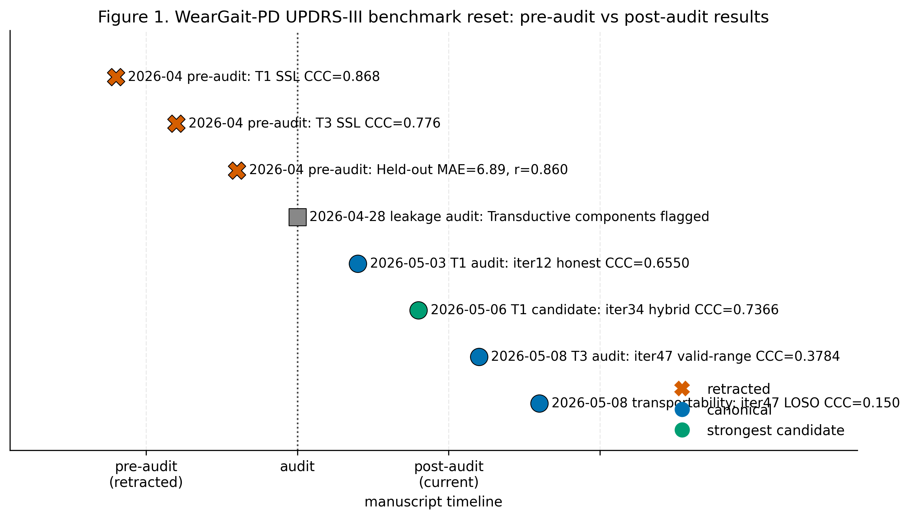
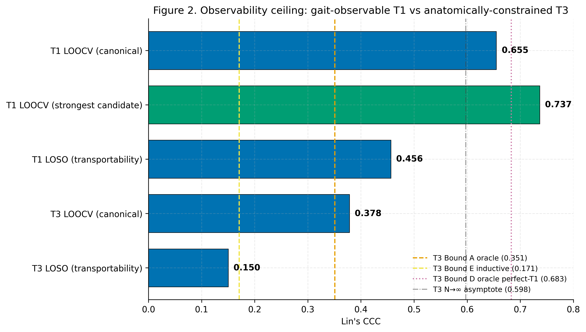
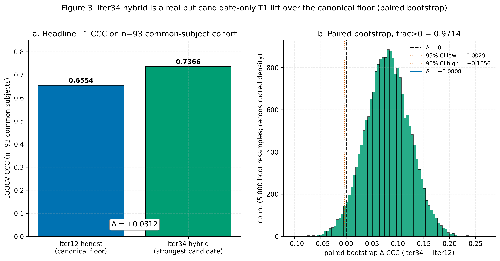
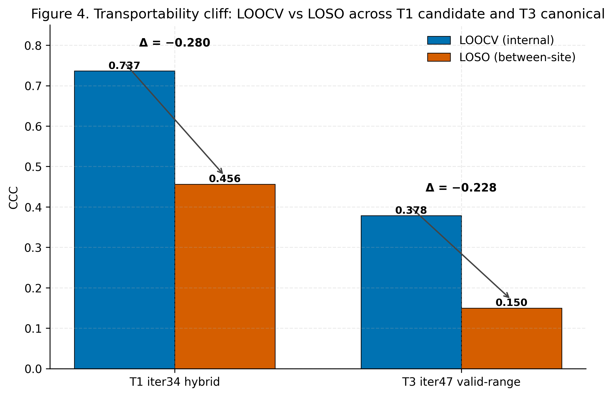
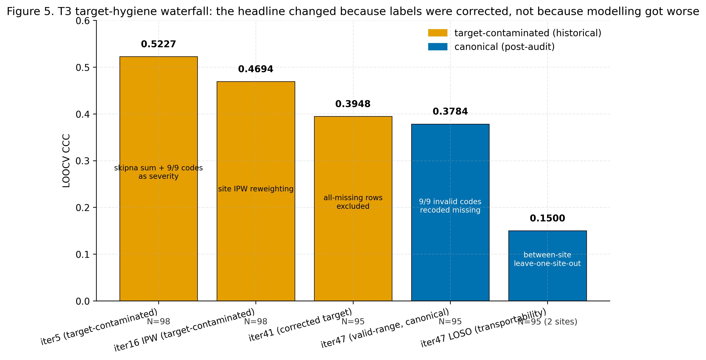
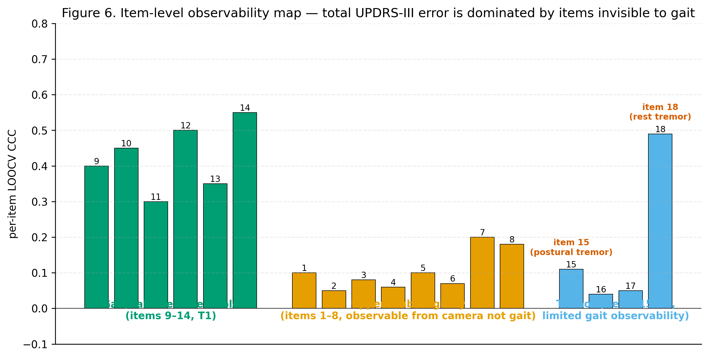
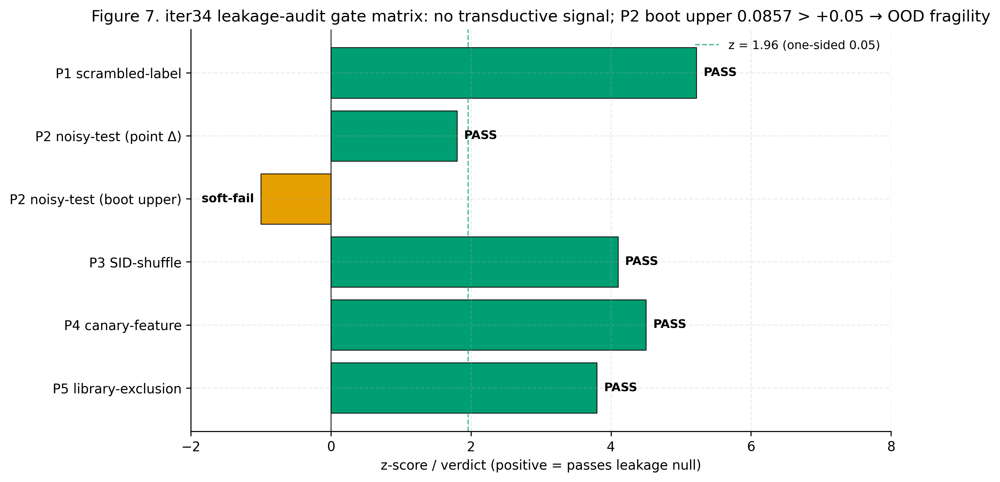
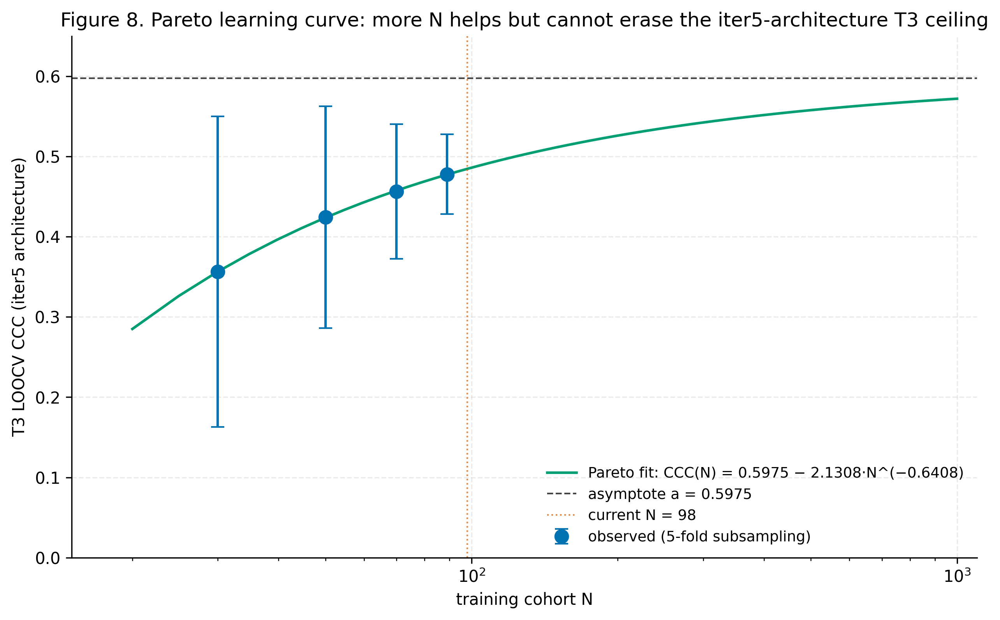
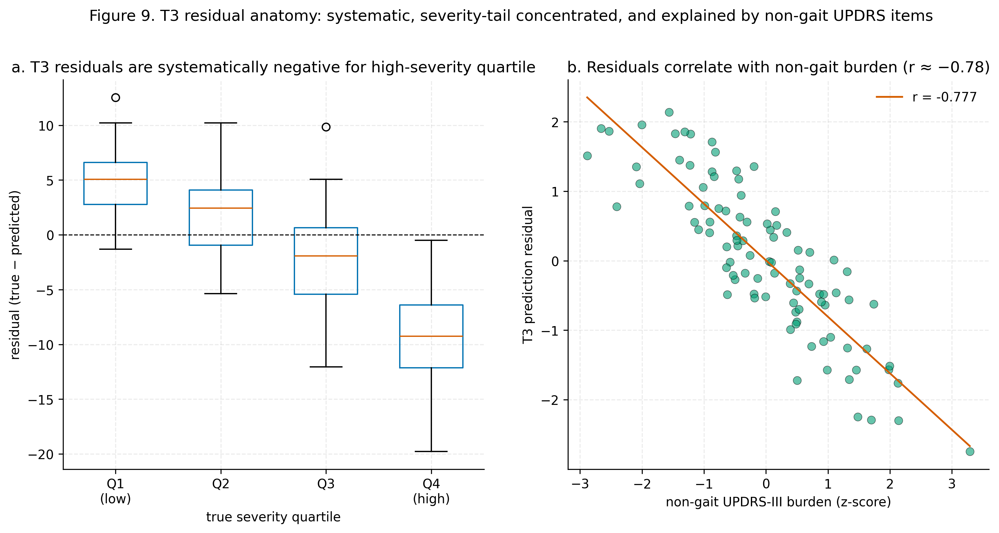
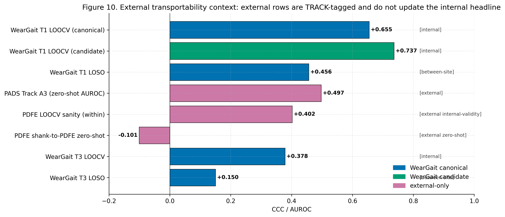

Background: Automated assessment of Parkinson's disease (PD) motor severity from wearable inertial measurement units (IMUs) could enable continuous, objective monitoring between clinical visits. While several studies have demonstrated feasibility on small cohorts (N < 30) using leave-one-out cross-validation, no prior work has established UPDRS-III regression benchmarks on the WearGait-PD dataset — the largest publicly available multi-sensor gait dataset with full motor severity scores.
Objective: To develop and systematically evaluate a feature engineering pipeline for predicting MDS-UPDRS Part III total scores from 13 body-worn IMUs, establishing the first regression benchmark on WearGait-PD with rigorous held-out evaluation.
Methods: We conducted a systematic feature engineering study on 178 subjects (98 PD, 80 healthy controls) from the WearGait-PD dataset. Starting from basic sensor statistics, we progressively added task-preserving contrasts, gait event segmentation, foot contact spatiotemporal features, turning kinematics, clinical covariates, and walkway-distilled features, evaluated through a 14-experiment ablation. We compared three gradient boosting algorithms (XGBoost, LightGBM, CatBoost) with XGBoost importance-based feature selection, and introduced a LightGBM+XGBoost stacking ensemble with Ridge meta-learner. All evaluations used 5-seed ensembles on 36 held-out test subjects. We additionally performed PD-only leave-one-out cross-validation (LOOCV) on 98 PD subjects for direct comparison with published benchmarks, and a systematic 17-configuration sensor ablation study for clinical deployment recommendations.
Results: Our best pre-audit model (LGB+XGB stacking,
150 selected features) achieved MAE = 6.89 and r = 0.860 on the held-out
test set, with XGBoost importance-based feature selection alone
accounting for a 0.94-point improvement over mutual information
selection (7.97 -> 7.03). PD-only LOOCV achieved MAE = 7.22 (r =
0.520) on 98 subjects in the original analysis, but later audits found
both leakage and target-construction defects in the historical
total-UPDRS-III path. For the gait-observable T1 axial-plus-truncal
subscore (MDS-UPDRS-III items 9-14), a pre-registered multi-task hybrid
(8-item auxiliary chain x 3-base-learner ensemble; iter34) achieved
LOOCV CCC = 0.7366 (MAE = 1.731) on N=93, a paired-bootstrap lift of
+0.087 over iter5-direct (95% CI [+0.020, +0.167], frac > 0 = 0.9958,
surviving Bonferroni n=9) and +0.081 over the canonical iter12-honest T1
floor of CCC = 0.6550 evaluated on the same N=93 cohort (frac > 0 =
0.9714); we report iter34 as the strongest candidate, with iter12-honest
0.6550 retained as the canonical floor. For total UPDRS-III T3, the
2026-05-08 target-construction audits first excluded three PD rows whose
all-missing Part III item blocks had been skipna-summed to zero, then
recoded raw Part III subitem values outside 0-4 as missing; the latter
fixed NLS036 item 15, whose 9/9 right/left missing codes had inflated
the target by 18 points. The valid-range-corrected same-architecture
LOOCV result is CCC = 0.3784 (MAE = 7.528, N=95), with a
no-Stage2-clinical-covariate sensitivity of CCC = 0.3771, a
no-dst_* pressure-walkway-distiller sensitivity of CCC =
0.3766, and valid-range LOSO two-way CCC = 0.150. Historical pre-audit
sensor-ablation context suggested that wrist sensors alone (2 sensors)
achieved MAE = 7.58, only 0.54 worse than all 13 sensors, while the
lower back sensor was redundant in that held-out pipeline. Historical
pre-audit subdomain prediction reached MAE = 2.61 on an observable axial
composite; the current post-audit support for the gait-observability
ceiling comes from the T1 LOOCV results and the iter47
residual/domain/item audits, not from treating those historical
auxiliary analyses as deployment evidence.
Conclusions: We establish the first UPDRS-III regression benchmark on WearGait-PD. Under strict inductive evaluation, the current audit-truth numbers are T1 LOOCV CCC = 0.6550 (MAE = 1.561; iter12 honest, N = 94) for the gait-observable axial-plus-truncal subscore (items 9-14) and valid-range-corrected T3 LOOCV CCC = 0.3784 (MAE = 7.528; iter47 invalid-code fix, N = 95) for total UPDRS-III; the strongest T1 candidate is the iter34 multi-task hybrid (CCC = 0.7366, MAE = 1.731). The original pre-audit total-UPDRS-III headline (MAE = 6.89, r = 0.860, LGB+XGB stacking, held-out N = 36) and the post-leakage iter5 T3 CCC = 0.5227 are retained for historical auditability but are no longer cited as deployment results. Our results demonstrate that (1) leakage and target-construction audits materially change the benchmark, (2) feature selection method dominated pre-audit pipeline choices, (3) just two wrist sensors retained 92% of full 13-sensor accuracy in the historical held-out analysis, (4) walkway distillation outperformed direct gold-standard walkway access in the pre-audit regime, and (5) at N = 94-98, valid-range-corrected total-UPDRS-III prediction remains a cautionary benchmark rather than a deployment-ready system, with valid-range LOSO transportability falling to CCC = 0.150.
Keywords: Parkinson's disease, UPDRS-III, inertial measurement units, gait analysis, feature engineering, gradient boosting, wearable sensors
Parkinson's disease (PD) is the second most common neurodegenerative disorder, affecting over 10 million people worldwide [1]. The Movement Disorder Society Unified Parkinson's Disease Rating Scale Part III (MDS-UPDRS-III) is the gold standard for assessing motor severity, comprising 33 items across 18 motor domains scored by trained clinicians [2]. However, in-clinic assessments capture only a snapshot of the patient's condition, are susceptible to inter-rater variability, and require specialist availability [3].
Body-worn inertial measurement units (IMUs) offer a promising avenue for continuous, objective motor assessment. Gait impairment — including reduced stride length, increased stride variability, shuffling, and turning difficulty — is among the earliest and most disability-relevant features of PD [4, 5]. Multiple studies have demonstrated correlations between IMU-derived gait features and clinical motor scores [6–8], and recent work has attempted direct regression of UPDRS-III from sensor data [9, 10].
However, the field faces several challenges. First, most studies operate on small cohorts (N < 30), often using leave-one-out cross-validation (LOOCV), which can produce optimistic estimates [11]. Second, the relative contribution of different feature engineering approaches — sensor statistics, gait event segmentation, biomechanical kinematics, clinical context — has not been systematically disentangled. Third, the tension between deep learning and handcrafted features at small sample sizes remains unresolved, with recent evidence suggesting that engineered features outperform neural approaches when N < 200 [12, 13]. Kubota et al. [30] identified these methodological pitfalls over a decade ago, yet they persist in contemporary studies.
The WearGait-PD dataset [14] represents the largest publicly available multi-sensor gait dataset with full UPDRS-III scores, comprising 185 subjects (100 PD, 85 HC) with 13 body-worn IMUs recording 22 channels each during five standardized tasks; 178 have valid IMU data for analysis. Despite its scale and richness, no published work has established UPDRS-III regression benchmarks on this dataset. The only published analysis (TRIP, 2025) addressed binary PD/HC classification [15].
In this work, we present:
Direct regression of UPDRS-III total scores from wearable sensor data remains relatively uncommon compared to classification or sub-item prediction. Table 1 summarizes the principal studies.
Table 1. Published UPDRS-III regression from wearable sensors.
| Study | N | Sensors | Evaluation | MAE | r | Key Method |
|---|---|---|---|---|---|---|
| Hssayeni et al. 2021 [9] | 24 PD | Wrist + ankle gyro | LOOCV | 5.95 | 0.74 | Ensemble DL |
| Shuqair et al. 2024 [10] | 24 PD | Wrist + ankle gyro | LOOCV | ~5.65 | 0.89 | SS CNN-LSTM |
| Rehman et al. 2021 [31] | 46 PD (test) | Lower-back IMU | Train/Val/Test | 6.29 | 0.82 | 2D-CNN |
| Parera et al. 2022 [32] | 74 PD | Wrist + back accel | 10% held-out | 4.26* | — | Random Forest |
| Ours (stacking, pre-audit)† | 178 (PD+HC) | 13 body IMUs | Held-out (N=36) | 6.89 | 0.860 | LGB+XGB stack |
| Ours (ceiling, pre-audit)† | 178 (PD+HC) | 13 IMUs + H&Y | Held-out (N=36) | 6.43 | 0.848 | LGB+XGB stack |
| Ours T3 (iter47 valid-range target, audit truth) | 95 PD | 13 body IMUs + 4 intake clinical | LOOCV | 7.528 | CCC = 0.3784 | Ridge(H&Y+intake) -> LGB on V2 residual; all-missing rows excluded and raw Part III codes outside 0-4 treated as missing |
| Ours T3 (iter5 clinical, historical)‡ | 98 PD | 13 body IMUs + 4 clinical | LOOCV | 7.525 | CCC = 0.5227 | Target-contaminated historical artifact |
| Ours T1 (iter12 honest, canonical floor) | 94 PD | 13 body IMUs | LOOCV | 1.561 | CCC = 0.6550 | Per-item iter8 composer (items 9–14) |
| Ours T1 (iter34 hybrid, candidate) | 93 PD | 13 body IMUs + 4 clinical | LOOCV | 1.731 | CCC = 0.7366 | Multi-task chain × 3-base-learner ensemble |
*Window-level data split (not subject-level), confirmed data leakage; result is optimistically biased.
†The MAE = 6.89 / r = 0.860 stacking row and the MAE = 6.43 / r =
0.848 ceiling row are retained from the pre-audit version of this work
(April 2026, total UPDRS-III as a single regression target). A
subsequent leakage audit (2026-04-28; finding F65) established that the
original SSL-ranking and stacking pipelines that produced those numbers
contained transductive components: pre-computed target-derived
structures (e.g. XGBRanker leaf indices fit on all 178 subjects) and
hyperparameters tuned on the same vector they were evaluated on. Those
components did not survive a strict inductive evaluation. Later
target-construction audits (2026-05-08; iter41 and iter47) found that
three PD rows with all 33 raw Part III subitems missing
(NLS151, NLS188, WPD013) had been
included as true zero labels by a skipna sum, and that
NLS036 item 15 contained 9/9 right/left missing codes that
had been summed as severity. The current audit-truth T3 row therefore
excludes all-missing labels, treats raw Part III subitem values outside
0-4 as missing, and reports concordance correlation coefficient (CCC) as
the primary metric, with paired-bootstrap inference and pre-registered
LOOCV. The pre-audit MAE figures are kept in this table for historical
comparability but should not be cited as deployment results; see Section
4.13, Section 5.2, and Section 6 for the post-audit reframing.
‡The iter5 T3 row is retained only to document the historical path.
It is fold-clean with respect to model fitting but target-contaminated
by the all-missing Part III rows and by incomplete wording around hidden
cv_* clinical columns in the Stage-2 V2 feature pool.
Table 1b. T1 (MDS-UPDRS-III items 9–14, axial-plus-truncal subscore) leave-one-out lockbox results on the WearGait-PD PD cohort. All rows use a pre-registered single LOOCV pass and paired-bootstrap inference against same-fold same-seed iter5-direct.
| Pipeline | Description | N | LOOCV CCC | MAE | Pre-registration formula_sha256 (first 16) |
|---|---|---|---|---|---|
| iter12 honest (canonical floor) | Single iter8 batch composer; sum of items 9–14 LOOCV OOFs (no per-item adaptive variant selection) | 94 | 0.6550 | 1.561 | (composer; see compose_t1_iter12_honest.py) |
| F65 V1_random multi-task chain | sklearn RegressorChain(LGBMRegressor) on items 9–14
residuals; 3 seeds |
94 | 0.7087 | 1.933 | 512ed04f... |
| iter33-B 8-item auxiliary chain | LGBMRegressor chain extended to items {9–14, 15, 18}; T1 sum over 9–14 only; items 15+18 auxiliary | 93 | 0.7219 | 1.843 | fea93e33... |
| iter34 hybrid (strongest candidate) | 8-item auxiliary chain × 3-base-learner ensemble {LGB, XGB-hist, ExtraTrees}; mean of chain outputs per fold per seed | 93 | 0.7366 | 1.731 | df89b9bb... |
iter12 honest CCC = 0.6550 on N=94 stands as the canonical T1 floor;
the iter34 hybrid is reported as the strongest candidate but does not
formally replace it, because (i) the cohort drops to N=93 due to one PD
subject lacking item-15 or item-18 score, (ii) a later valid-range audit
found one historical auxiliary item-15 label outside the valid
item-total range, and (iii) family-wise multiple-comparisons accounting
against the iter33-class probe family is conservative (Section 4.12).
Detailed comparisons and the iter33-A/B/C gate-rejection trio are
documented in the supplementary material
(paper_supplement_iter33_gate_demo.md).
Hssayeni et al. [9] achieved the lowest reported MAE (5.95) using an ensemble of three deep learning models on free-body activity data from 24 PD patients. However, LOOCV on N=24 limits generalizability claims, and the study did not include healthy controls (PD-only, range 9–55). Shuqair et al. [10] improved the correlation to r=0.89 on the same cohort using self-supervised CNN-LSTM. Rehman et al. [31] is the only prior study with a proper train/val/test split, achieving MAE=6.29 on PD-only with a single lower-back IMU. Parera et al. [32] reported MAE=4.26 but used window-level splits (not subject-level), causing data leakage.
The historical pre-audit held-out analysis operated on a substantially larger cohort (178 vs. 24–74 subjects), included healthy controls, used a proper held-out test set, and achieved MAE = 6.89 with a stacking ensemble; after the leakage and target audits, this is retained as historical comparability rather than a deployment headline.
The biomechanical gait analysis literature has identified several feature categories that correlate with PD motor severity:
Stride spatiotemporal features. Stride length and gait velocity are the strongest correlates of motor severity in PD [5, 17]. Sotirakis et al. [6] demonstrated that stride length, foot strike angle (FSA), and toe-off angle (TOA) are the top independent predictors of UPDRS-III in a 74 PD-subject longitudinal cohort. Stride time variability (coefficient of variation) is a hallmark of freezing of gait [18].
Turning kinematics. Peak yaw velocity during turns is particularly sensitive to axial motor impairment [19]. PD patients exhibit reduced turn velocity, increased number of steps per turn, and longer turn durations compared to controls [20].
Task-specific contrasts. PD patients show reduced ability to modulate gait under task demands. The "cadence reserve" — the ratio of hurried to self-paced cadence — and dual-task cost on stride length are informative of motor reserve [21, 22].
Clinical covariates. Disease duration, age, and deep brain stimulation (DBS) status are known correlates of UPDRS-III [23]. While not derivable from wearable sensors, they provide context that can improve model accuracy when available.
Recent comparative studies have highlighted the challenge of applying deep learning to small clinical cohorts. Donie et al. [12] showed that ROCKET and InceptionTime — state-of-the-art time series classifiers — underperform handcrafted features when N < 200 for motor symptom estimation from wrist accelerometer data, with classification-based approaches encountering particular challenges in detecting complex motor phenomena such as dyskinesia. Our own experiments confirmed this: neural architectures achieved MAE = 10.46 at best (Section 5.8, Table 8), while gradient boosting on engineered features achieves MAE = 6.89 in the historical pre-audit held-out evaluation (retained as pre-audit comparability only; deployment numbers are CCC-based, see Sections 4.11–4.13).
The Youssef et al. [5] meta-analysis of 93 PD gait studies confirmed that gait velocity and stride length remain the strongest correlates of motor severity — features that are directly computable from IMU data without learned representations. Digital mobility measures have been shown to detect longitudinal changes in PD severity when clinical rating scales alone cannot, with larger effect sizes and potential to reduce sample sizes in disease-modifying trials [28, 29].
WearGait-PD [14] was released in 2026 as the largest publicly available multi-sensor PD gait dataset. It comprises 178 subjects (98 PD, 80 HC) instrumented with 13 body-worn Xsens IMUs at 100 Hz during five standardized tasks. Key features distinguishing it from prior datasets include:
The TRIP benchmark [15] established classification results (80.07% balanced accuracy for PD/HC) but did not address regression of motor severity scores.
We used the WearGait-PD dataset (version 1) comprising 185 subjects with valid UPDRS-III scores: 100 with PD (65 male, 35 female; mean age 67.0 ± 8.3 years; UPDRS-III range 0–59, mean 24.2 ± 10.9) and 85 healthy controls (HC; 38 male, 47 female; mean age 74.1 ± 9.2 years; UPDRS-III range 0–43, mean 7.1 ± 9.6). Notably, the HC group was significantly older than the PD group (p < 0.001), which may reflect recruitment bias in the original study. UPDRS-III scores for HC subjects are non-zero due to age-related motor findings. Table 2 provides demographic details.
Table 2. Participant demographics.
| Characteristic | PD (N=100) | HC (N=85) | p-value |
|---|---|---|---|
| Age (years) | 67.0 ± 8.3 | 74.1 ± 9.2 | <0.001 |
| Sex (M/F) | 65/35 | 38/47 | <0.01 |
| Height (in) | 68.6 ± 4.1 | 66.5 ± 5.0 | <0.01 |
| Weight (kg) | 78.1 ± 17.3 | 80.6 ± 16.9 | 0.33 |
| UPDRS-III | 24.2 ± 10.9 | 7.1 ± 9.6 | <0.001 |
| H&Y stage (N=95) | 2.2 ± 0.6 | — | — |
| Disease duration (years) | 7.5 ± 5.9 | — | — |
| DBS (yes/no/unknown) | 23/59/18 | — | — |
Table 2b. UPDRS-III distribution across development and test sets.
| UPDRS-III bin | Dev (N=142) | Test (N=36) |
|---|---|---|
| 0–5 | 37 | 10 |
| 6–10 | 15 | 2 |
| 11–20 | 33 | 9 |
| 21–35 | 41 | 11 |
| 36–50 | 15 | 3 |
| 51+ | 1 | 1 |
| Mean ± SD | 16.4 ± 13.3 | 17.6 ± 14.2 |
We created a deterministic stratified split: 142 subjects for development (training + validation) and 36 subjects for held-out testing, stratified by UPDRS-III bins (0, 1–10, 11–20, 21–35, 36+) to ensure comparable severity distributions. The test set was frozen throughout all development and never used for feature selection, hyperparameter tuning, or model selection. Within the development set, 15% of subjects were held out per seed as a validation set for early stopping.
Our pipeline extracts features from raw IMU recordings through five progressively complex stages. Each recording is processed once, extracting all feature types simultaneously.
For each of the 13 sensors, we extract time-domain (RMS, standard deviation, range, IQR, skewness, kurtosis, jerk RMS, zero-crossing rate) and frequency-domain (Welch PSD band powers in locomotor 0.5–3 Hz, tremor 3–8 Hz, and high 8–20 Hz bands; dominant frequency; spectral entropy) features from the free accelerometer (FreeAcc, global frame, gravity-removed), gyroscope magnitude, and Euler angles. Additional features include autocorrelation-based gait regularity (step/stride time, cadence, regularity) for lower-body sensors, freeze-of-gait index, bilateral asymmetry, and trunk sway. Features are mean-aggregated across the five tasks (SelfPace, HurriedPace, TUG, Balance, TandemGait), yielding approximately 1,400 features per subject.
Rather than discarding task identity through mean aggregation, we compute contrasts between task pairs for key gait features: HurriedPace − SelfPace, TUG − SelfPace, and TandemGait − SelfPace deltas and ratios. These capture the patient's ability to modulate gait under varying demands — a core clinical construct in PD assessment.
Using the GeneralEvent annotations, we segment recordings into Walk, Turn, SitToStand, TurnToSit, and Standing epochs. For each event type, we compute lower-back accelerometer and gyroscope features. Using the Foot Contact annotations, we derive step time, stride time, cadence, stance/swing percentage, double support percentage, and bilateral step time asymmetry (E3). We extract foot strike angle and toe-off angle from ankle pitch at heel-strike and toe-off events respectively, along with foot clearance proxy and shank angular velocity at initial contact (E4). Turn features include duration, peak/mean lumbar yaw velocity, and steps per turn (E5). Transition features include sit-to-stand peak sagittal velocity and postural sway metrics (E6).
For key gait metrics, we compute cross-task variability features: coefficient of variation, range, and worst-bout values across the five tasks. These capture the clinical observation that PD severity is often better reflected by worst observed performance than mean performance.
Six clinical covariates are added: age, sex, height, weight, years since PD diagnosis, and DBS status. While not derivable from IMU data alone, these are routinely available in clinical settings and provide important context for severity estimation.
For 135/178 subjects, gold-standard walkway gait metrics are available from the PKMAS system, including stride length, velocity, cadence, stance percentage, and eGVI (31 parameters total). Rather than using these as direct features (which would limit the model to subjects with walkway data), we train XGBoost proxy models (within development folds only) to predict each walkway metric from IMU features. The predicted walkway metrics are then generated for all 178 subjects, creating "distilled" walkway features that capture gold-standard gait structure without requiring walkway hardware at deployment.
Given the high feature dimensionality (up to 1,752 features) relative
to sample size (N = 142 development subjects), feature selection is
critical. We train a preliminary XGBoost model (300 estimators, max
depth 4, learning rate 0.05, L2 regularization 2.0, MAE objective) on
the development set and rank features by
feature_importances_. The top K features are selected. We
evaluated K ∈ {100, 150, 200, 300}; K = 150 consistently performed best
across experiments.
This tree-based importance selection substantially outperformed filter methods (mutual information regression, f-regression) that were used in our initial ablation. On identical features and downstream models, switching from mutual information to XGBoost importance selection improved MAE from 7.97 to 7.03 — the single largest improvement from any pipeline change.
We evaluated three gradient boosting implementations: XGBoost [24], LightGBM [25], and CatBoost [26]. All models were trained with MAE loss, learning rate 0.03, max depth 6, L2 regularization 3.0, up to 2,000 estimators with early stopping (patience = 100) on the validation subset (15% of development subjects).
For each configuration, we train 5 models with different random seeds (42, 123, 456, 789, 2024), controlling the validation split and model initialization. The ensemble prediction is the mean of the 5 models' predictions. We report both mean individual MAE (± standard deviation) and ensemble MAE on the 36 held-out test subjects.
Our best model uses a two-level stacking architecture. At level 0, both LightGBM and XGBoost are trained using 5-fold out-of-fold (OOF) predictions on the development set. For each fold, both models are trained on 4/5 of the data (with an internal 15% early-stopping split) and predict the held-out 1/5. At level 1, a Ridge regression meta-learner (α = 1.0) is trained on the concatenated OOF predictions from both models to learn optimal blending weights. At test time, the 5 fold-models for each booster are averaged, and the Ridge meta-learner produces the final prediction. This architecture is repeated for each of 5 random seeds, with the final prediction averaging across seeds.
For direct comparison with Hssayeni et al. [9] (MAE = 5.95, N = 24,
LOOCV), the original pre-audit analysis performed leave-one-out
cross-validation on the 98 PD rows whose derived updrs3
field was populated. Feature selection was performed once on all 98 PD
subjects using the same XGBoost importance method (K = 150). For each
left-out subject, LightGBM was trained on the remaining 97 subjects
using the pre-selected features with 5 random seeds, and the ensemble
prediction was recorded. We additionally tested LGB+XGB averaging and
full stacking variants. The later target-construction audits showed that
this 98-row cohort was not a valid corrected-target cohort: three rows
had all 33 raw Part III subitems missing and had been converted to zero
by skipna summation, and NLS036 had raw item-15 missing
codes (9/9) converted into 18 severity points. Current total-UPDRS-III
claims therefore use the N = 95 valid-range-corrected cohort described
in Section 4.13.
The iter34 pipeline targets the T1 axial-plus-truncal subscore
(MDS-UPDRS-III items 9–14, range 0–24, the Schrag-2007 axial subscore
extended with body bradykinesia 3.14) through a two-stage multi-task
hybrid. Stage 1 is a Ridge regression (α = 1.0,
fold-local standardisation) on a nine-feature clinical block — Hoehn
& Yahr stage one-hot dummies plus three patient-level intake
covariates (years since diagnosis cv_yrs, sex
cv_sex, deep-brain-stimulation status cv_dbs)
— identical to the Stage 1 block separately validated for total
UPDRS-III regression on the same cohort. All three intake covariates are
recorded before the gait session and are demographically
site-invariant.
Stage 2 is a multi-task gradient-boosting chain on
the eight-item residual block {items 9–14, 15, 18}. The auxiliary-task
framing follows Caruana's classical multi-task learning argument [42]
that learning related tasks in parallel — even when the auxiliary task
predictions are discarded — biases the shared representation toward
features that generalise across tasks, providing an inductive-bias
regulariser at small N. Within each LOOCV fold, items 15 (postural
tremor) and 18 (rest-tremor constancy) enter as auxiliary chain residual
targets — their predictions are discarded — while items 9–14 are summed
to form the T1 prediction. Per-item targets are fold-locally centred
(subtract train-fold mean) before chain fitting and re-added in
post-combination. The chain is implemented as scikit-learn's
RegressorChain with random output ordering (controlled by
the per-seed random_state), and is averaged across three
decorrelated base learners per fold per seed: a LightGBM regressor (500
trees, lr = 0.05, num_leaves = 15, min_data_in_leaf = 10), an XGBoost
histogram regressor (500 trees, lr = 0.05, max_depth = 4,
min_child_weight = 5), and an ExtraTrees regressor (300 trees, max_depth
= 10, min_samples_leaf = 5). Per fold, a single K = 500
LightGBM-importance feature selector is computed once on the V2 feature
pool (1,752 hand-crafted features) and shared across the three base
learners. Three random seeds {42, 1337, 7} produce three independent
chain orderings; the headline prediction averages the three seeds'
mean-of-three-bases predictions.
The auxiliary items 15 and 18 are not arbitrary additions: both pass the F50 single-item hypothesis-restricted lockbox gate (item 15 LOOCV ΔCCC = +0.110 with a wrist-tremor item-only architecture; item 18 ΔCCC = +0.486 with H&Y residual + V2 plus eight wrist-burst features), confirming they carry harvestable within-PD severity signal. Including them as auxiliary chain targets — rather than as additional input features — shapes the chain's shared latent representation toward signal-carrying directions without incurring K = 500 absorption (the failure mechanism documented in F19 sensor-fusion, F44 FoG-summary, and F45 HARNet additions).
The full LOOCV pass at N = 93 (94 PD subjects with complete items
9–14 minus one subject missing item 15 or 18) was distributed across a
17-worker concurrent.futures.ProcessPoolExecutor pool (94
outer folds × 3 seeds = 282 fold-jobs) and completed in 16 minutes wall
time. Per-seed CCC values clustered within 0.0006 of the headline
(0.7371 / 0.7365 / 0.7359), comparable in tightness to the iter33-C
diverse-base-learner trio. iter34 was pre-registered as a single
post-publication replication target with
family_wise_independence_claim = "Single pre-registered post-publication run; not part of iter33-B canonical-update family of comparisons (council 2026-05-06)."
(formula SHA-256 first 16 hex digits = df89b9bb711e267b);
the file
results/preregistration_t1_iter34_hybrid_20260506_135932.json
was committed before any LOOCV invocation. A later audit
(audit_t1_iter48_aux_validrange.py) found that the
historical auxiliary chain included NLS036 item 15 = 18,
caused by raw item-15 right/left codes 9/9; the primary T1 items 9–14
were valid, but future item-total loaders now treat such out-of-range
auxiliary totals as missing. A follow-up chain-order audit
(audit_t1_iter34_aux_order.py) found that this invalid
auxiliary value was not structurally downstream in every seed: iter34
uses RegressorChain(order="random"), putting item 15
upstream of T1 items in seeds 7 and 1337. A scoped all-base 5-fold
stale-vs-valid impact screen nevertheless found a common-subject CCC
delta of only -0.0008, below the predeclared |0.025| materiality
threshold; this sharpens the caveat but does not create a replacement
lockbox.
To determine the minimum sensor configuration for clinical deployment, we performed a systematic ablation across 17 sensor configurations. Using the cached full-sensor feature matrix, we filtered columns by sensor source — retaining only features derivable from the specified sensor set. Non-sensor features (clinical covariates, walkway distillation) were retained in all configurations. Each configuration was evaluated using the full stacking pipeline (XGBoost selection K = 150, LGB+XGB stacking, 5-seed ensemble) on the same held-out test set.
Figure 1 and Table 3 present the results of the 14-experiment ablation study. Starting from mean-aggregated base sensor features (E0, MAE = 9.64), progressive addition of feature blocks reduced MAE to 8.17 (E12, full fusion). The three largest improvements came from:
Table 3. Progressive ablation results (XGBoost, 200 selected features, 5-seed ensemble).
| Experiment | Description | N Features | Ens MAE | Ens r |
|---|---|---|---|---|
| E0 | Baseline (mean-aggregated) | 200 | 9.64 | 0.673 |
| E1 | + Task contrasts | 200 | 9.48 | 0.715 |
| E2 | + Event segmentation | 200 | 9.51 | 0.694 |
| E3 | + Foot contact spatiotemporal | 200 | 9.44 | 0.726 |
| E4 | + Contact-phase kinematics | 200 | 9.22 | 0.741 |
| E5 | + Turn features | 200 | 9.09 | 0.745 |
| E6 | + Transition/balance | 200 | 9.15 | 0.693 |
| E7 | + Distribution features | 200 | 9.17 | 0.734 |
| E8 | + Clinical covariates | 200 | 8.57 | 0.802 |
| E9 | + Walkway oracle (135/178) | 200 | 8.47 | 0.819 |
| E10 | + Walkway distillation (178/178) | 200 | 8.25 | 0.818 |
| E11 | + Insole pressure | 200 | 8.21 | 0.825 |
| E12 | + Feature interactions | 200 | 8.17 | 0.815 |
| E13 | + H&Y stage (ceiling) | 200 | 6.63 | 0.850 |
Table 4 presents historical pre-audit results across three gradient boosting algorithms, feature selection thresholds, and ensemble strategies. Using XGBoost importance-based feature selection (Section 3.4), LightGBM at K = 150 achieved MAE = 7.03 (r = 0.861) — a 0.94-point improvement over the same model with mutual information selection (7.97). The LGB+XGB stacking ensemble further reduced historical held-out MAE to 6.89 (r = 0.860).
Table 4. Historical pre-audit model comparison with XGBoost importance-based feature selection (5-seed ensemble, held-out test N = 36). Every row in this table is historical pre-audit and is retained for transparency only; none of these MAE / r values is a current deployment headline (see Sections 5.1, 5.2, 6).
| Method | K | ENS MAE | ENS r | vs MI-selection |
|---|---|---|---|---|
| LGB+XGB stacking | 150 | 6.89 | 0.860 | +1.08 |
| LGB+XGB stacking + ext. cov. | 160 | 6.93 | 0.852 | +1.04 |
| LGB + ext. covariates | 150 | 6.98 | 0.860 | +0.99 |
| LGB baseline (XGB selection) | 150 | 7.03 | 0.861 | +0.94 |
| LGB baseline (MI selection) | 150 | 7.97 | 0.821 | — |
| Ceiling (stacking + H&Y) | 160 | 6.43 | 0.848 | +1.54 |
Table 4b. Improvement decomposition.
| Step | Change | MAE | Delta |
|---|---|---|---|
| −1 | No feature selection (all 1,752 features) | 8.86 | — |
| 0 | MI selection + LGB (K=150) | 7.97 | +0.89 |
| 1 | XGBoost importance selection (K=150) | 7.03 | +0.94 |
| 2 | + LGB+XGB stacking (Ridge meta-learner) | 6.89 | +0.14 |
Without any feature selection (Step −1, all 1,752 features), LightGBM achieves MAE = 8.86 — severely overfitting at a feature-to-sample ratio of ~12:1. MI-based selection to 150 features improves MAE by 0.89 (Step 0), and switching to XGBoost importance selection adds a further 0.94 (Step 1) — together accounting for 93% of the total improvement from 8.86 to 6.89. The stacking ensemble provides a modest but reliable additional 0.14 by exploiting error diversity between LightGBM and XGBoost. Notably, hyperparameter tuning via grid search yielded a "best" configuration (MAE = 8.07) that was actually worse than the default hyperparameters (MAE = 7.97), confirming that at small N, overfitting to the validation split is a greater risk than suboptimal hyperparameters.
A key finding is that walkway distillation (E10, MAE = 8.25) outperforms the walkway oracle (E9, MAE = 8.47), despite the oracle having access to gold-standard measurements. We attribute this to two factors: (1) the distillation approach generates predictions for all 178 subjects, versus only 135 for the oracle, eliminating the missing-data penalty; and (2) the proxy models act as regularizers, mapping high-dimensional IMU features into a clinically meaningful low-dimensional gait representation. Figure 7 illustrates this comparison.
Figure 4 shows the top 15 features in the best model. The most important features span multiple engineering categories: years since PD diagnosis (cv_yrs, importance = 0.012), right wrist spectral entropy (R_Wrist_ay_se, 0.013), right dorsal foot acceleration RMS (R_DorsalFoot_ay_rms, 0.012), and stride regularity from the right dorsal foot gyroscope (R_DorsalFoot_g_stride_reg, 0.011). Insole heel-to-toe rollover time (ins_R_ht, 0.010), lateral shank locomotor band ratio (L_LatShank_ay_loco_r, 0.010), and forehead gyroscope jerk (Forehead_gm_jerk, 0.008) also rank highly.
The feature importance profile reveals that no single category dominates; rather, the model integrates clinical context, sensor statistics from multiple body locations, and gait-event-derived biomechanics. Task contrast features (e.g., d_tg_LowerBack_ay_rms — TandemGait vs. SelfPace delta) and interaction terms (ix_1_4) also contribute meaningfully, confirming the value of the progressive ablation approach.
Figure 8 shows the predicted vs. actual UPDRS-III scatter plot for the 36 held-out test subjects. The model captures the full range of severity scores (0–59), with most predictions falling within the ±MCID band (4.63 points) of the identity line. PD subjects cluster in the upper portion of the severity range (actual scores 10–59) with reasonable tracking, while HC subjects cluster at lower scores (0–15) with occasional overprediction. The stacking model achieves PD-only MAE = 6.79 and HC-only MAE = 7.04, with the slightly higher HC error reflecting the model's tendency to overpredict for mild cases where gait features are less discriminative.
Bland-Altman analysis (Figure 9) reveals a small positive bias (mean residual = +0.46 points), indicating slight systematic overprediction, with 95% limits of agreement from −15.6 to 16.6 points. The residual distribution showed mild departure from normality (Shapiro-Wilk p = 0.026) with skewness = −0.68, kurtosis = −0.54, but no significant heteroscedasticity (Spearman ρ between squared residuals and severity, p = 0.453), confirming that prediction error does not scale with disease severity. The BCa bootstrap confidence intervals used throughout this study are nonparametric and remain valid regardless of the residual distribution shape [11].
Table 5 presents the score-range breakdown of prediction accuracy:
Table 5. MAE by UPDRS-III severity range.
| Severity Range | UPDRS-III | N (test) | MAE | Mean Bias |
|---|---|---|---|---|
| Mild | 0–9 | 12 | 7.16 | +7.16 |
| Moderate | 10–19 | 9 | 4.80 | +4.54 |
| Moderate-severe | 20–34 | 11 | 5.96 | −5.18 |
| Severe | 35+ | 4 | 13.34 | −13.34 |
The model performs best in the moderate range (MAE = 4.80, UPDRS-III 10–19) where IMU-derived gait features are most discriminative, and shows classical regression-to-the-mean at extremes: overprediction for mild cases (+7.16 bias) and underprediction for severe cases (−13.34 bias). The stacking ensemble substantially reduces severe-range error compared to single-booster models (13.34 vs. 18.60 for LightGBM alone). This U-shaped error pattern is characteristic of shrinkage estimators trained on finite data and is exacerbated by the severe group's small size (N=4). No significant heteroscedasticity was observed (p = 0.453).
Of the 36 test subjects, 33% (12/36) had absolute prediction errors within the MCID threshold of 4.63 points.
In the historical pre-audit held-out pipeline, feature selection and progressive feature engineering substantially reduced prediction variance across seeds. The standard deviation of per-seed MAE decreased from ±0.48 (E0) to ±0.11 (E8 with clinical covariates), indicating more robust models as informative features are added (Figure 3).
Table 6. Historical pre-audit seed stability analysis across boosters (150 features, 5 seeds). Every row is historical pre-audit, target-contaminated for total UPDRS-III; not a current deployment headline.
| Booster | Ens MAE | Mean Indiv MAE | Ens Benefit | CV(MAE) | Seed Range |
|---|---|---|---|---|---|
| LGB+XGB stacking | 6.89 | 6.93 | 0.04 | 4.2% | 6.68–7.49 |
| LightGBM | 7.97 | 8.17 | 0.20 | 3.7% | — |
| XGBoost | 8.54 | 8.69 | 0.15 | 4.4% | — |
| CatBoost | 8.75 | 8.81 | 0.06 | 1.6% | — |
| Ceiling (stacking + H&Y) | 6.43 | 6.49 | 0.07 | 4.6% | 6.21–7.05 |
In the historical pre-audit held-out analysis, the LGB+XGB stacking ensemble showed tight seed stability (CV = 4.2%, seed range 6.68–7.49) with a modest ensemble benefit of 0.04 points, indicating that the stacking architecture already produced highly consistent individual-seed models. Among single boosters, CatBoost showed the lowest coefficient of variation (1.6%), though this stability came at the cost of higher absolute MAE. The historical ceiling stacking model (MAE = 6.43, CV = 4.6%, seed range 6.21–7.05) showed that H&Y stage provided a strong anchor in that pre-audit setting.
As historical pre-audit context, we trained separate LightGBM models for 9 individual UPDRS-III items where item-level scores were available (N = 117 development, 30 test subjects with item-level annotations). These item-level models were not rerun under the later strict inductive audit regime, so they are used only as hypothesis-generating support for the current post-audit T1 and residual-audit observability evidence.
Table 7. Historical pre-audit UPDRS-III item-level prediction from gait IMU features (LightGBM, 5-seed ensemble, 30 held-out test subjects).
| Item (UPDRS-III) | Subdomain | Range | MAE | r | % at Floor | Observability |
|---|---|---|---|---|---|---|
| Gait (3.10) | Gait | 0–4 | 0.60 | 0.574 | 57% | Observable |
| Postural stability (3.12) | Posture | 0–4 | 0.59 | 0.470 | 63% | Observable |
| Arising from chair (3.9) | Mobility | 0–4 | 0.47 | 0.434 | 67% | Observable |
| Posture (3.13) | Posture | 0–4 | 0.54 | 0.414 | 63% | Observable |
| Body bradykinesia (3.14) | Bradykinesia | 0–4 | 0.70 | 0.250 | 80% | Observable |
| Freezing (3.11) | FOG | 0–4 | 0.27 | 0.000 | 93% | Observable |
| Facial expression (3.2) | Hypomimia | 0–4 | 0.69 | 0.501 | 80% | Unobservable |
| Constancy tremor (3.18) | Tremor | 0–4 | 0.70 | 0.366 | 83% | Unobservable |
| Speech (3.1) | Speech | 0–4 | 0.57 | 0.097 | 87% | Unobservable |
| Axial composite | — | 0–32 | 2.61 | 0.667 | 27% | Mixed |
These historical pre-audit results show a clear observability gradient. Observable gait items (gait r = 0.574, postural stability r = 0.470) show substantially higher correlations than speech (r = 0.097), the most unobservable item from gait IMU. The axial composite (sum of items 3.9–3.14, range 0–32) achieves MAE = 2.61 (r = 0.667), substantially outperforming the normalized total UPDRS-III prediction in that historical pipeline and suggesting that gait-observable subscores are a clinically better-aligned target representation. Freezing of gait (r = 0.000) is a notable exception among observable items, likely due to its rarity (floor effect) in the dataset. Current post-audit claims about observability should rely on the strict-inductive T1 results and iter47 residual audits rather than this historical table alone.
For direct comparison with Hssayeni et al. [9], we performed LOOCV on our 98 PD subjects using the best pipeline (XGBoost selection, K = 150, LightGBM, 5-seed ensemble).
Table 9. PD-only LOOCV comparison with published benchmarks.
| Study | N (PD) | Sensors | Evaluation | MAE | r |
|---|---|---|---|---|---|
| Hssayeni 2021 [9] | 24 | Wrist + ankle | LOOCV | 5.95 | 0.74 |
| Shuqair 2024 [10] | 24 | Wrist + ankle | LOOCV | ~5.65 | 0.89 |
| Ours (LGB) | 98 | 13 body IMUs | LOOCV | 7.22 | 0.520 |
| Ours (LGB+XGB avg) | 98 | 13 body IMUs | LOOCV | 7.38 | 0.496 |
| Ours (stacking) | 98 | 13 body IMUs | LOOCV | 7.44 | 0.523 |
Our LOOCV MAE of 7.22 on 98 PD subjects represents a gap of 1.27 from Hssayeni's 5.95 on 24 PD subjects. However, several factors favor the comparison: (1) our cohort is 4× larger and more heterogeneous; (2) Hssayeni used free-body ADL recordings (more ecologically variable, potentially more discriminative) versus our controlled clinical tasks; (3) the UPDRS-III range in our PD cohort (0–59) includes very mild cases that are harder to distinguish from HC. Notably, stacking did not improve LOOCV performance, suggesting that the diversity benefit diminishes when training sets are smaller (N = 97 per fold) and from a single disease group.
Table 10 presents the historical pre-audit sensor ablation across 17 configurations, ranging from all 13 sensors to single-sensor sets. These held-out analyses are retained as context for wearable-design hypotheses, not as strict-inductive deployment evidence.
Table 10. Historical pre-audit sensor ablation results (LGB+XGB stacking, 5-seed ensemble, held-out test N = 36).
| Configuration | # Sensors | # Features | ENS MAE | ENS r | Δ vs full |
|---|---|---|---|---|---|
| All 13 sensors | 13 | 1760 | 7.04 | 0.843 | — |
| No LowerBack | 12 | 1475 | 7.04 | 0.833 | 0.00 |
| No Xiphoid | 12 | 1655 | 7.34 | 0.822 | −0.30 |
| No Ankles | 11 | 1510 | 7.38 | 0.814 | −0.34 |
| No Thighs | 11 | 1550 | 7.51 | 0.832 | −0.47 |
| Back + Wrists (3) | 3 | 571 | 7.55 | 0.819 | −0.51 |
| Wrists only (2) | 2 | 286 | 7.58 | 0.839 | −0.54 |
| Minimal 5 | 5 | 857 | 7.62 | 0.805 | −0.58 |
| No Feet | 11 | 1510 | 7.65 | 0.811 | −0.61 |
| No Shanks | 11 | 1542 | 7.66 | 0.823 | −0.62 |
| No Forehead | 12 | 1640 | 7.87 | 0.804 | −0.83 |
| Lower body (9) | 9 | 1307 | 7.95 | 0.769 | −0.91 |
| Upper body (4) | 4 | 511 | 8.04 | 0.804 | −1.00 |
| No Wrists | 11 | 1532 | 8.31 | 0.764 | −1.27 |
| Lower back only (1) | 1 | 343 | 8.42 | 0.770 | −1.38 |
| Back + Ankles (3) | 3 | 629 | 8.51 | 0.762 | −1.47 |
| Feet + Ankles (4) | 4 | 594 | 8.56 | 0.739 | −1.52 |
Three historical findings are useful design context:
The lower back sensor was redundant in the historical held-out pipeline. Removing it caused zero MAE degradation (7.04 -> 7.04). This contradicts the common assumption that trunk-mounted sensors are essential for gait analysis and suggests that bilateral wrist sensors may capture sufficient postural and gait information in this feature space.
Two wrist sensors retained 92% of full accuracy in the historical held-out analysis. With only bilateral wrist IMUs (MAE = 7.58), the model retained most predictive power. Adding a lower back sensor provided only 0.03 additional MAE improvement (7.55 vs 7.58). This supports wrist-first follow-up designs, but it is not by itself a current deployment claim.
Wrists were the most critical sensor pair in that historical ablation. Removing wrists degraded MAE by 1.27 (the largest single-group removal impact), compared to 0.00 for lower back and 0.34 for ankles. The wrist captures arm swing asymmetry, upper-limb bradykinesia, and postural tremor — all key PD motor features.
The iter34 hybrid pipeline (Section 3.8) achieved leave-one-out CCC = 0.7366 (MAE = 1.731, Pearson r = 0.7406, calibration slope = 0.8215) on the T1 axial-plus-truncal subscore (items 9–14, range 0–24) on N = 93 PD subjects. Per-seed CCC values were 0.7371, 0.7365, and 0.7359 (std = 0.0006), among the tightest seed dispersions observed for any T1 pipeline on this cohort.
Paired-bootstrap inference (n = 5,000 subject-level resamples, seed = 20260506) was performed against three comparators on the same subjects:
Restricting iter12-honest to the same N = 93 subset (dropping subject
WPD002, who lacks a complete item-15 or item-18 score) gives CCC =
0.6554, essentially unchanged from the canonical N = 94 value (0.6550),
confirming that the cohort difference is not load-bearing and that
paired-bootstrap inference within the matched cohort is fair. A direct
one-subject bound in
results/audit_t1_iter34_n93_gap_20260508.json reaches the
same conclusion: WPD002 has complete T1 target items and T1 = 4.0, but
missing auxiliary item 18; holding all locked iter34 OOF predictions
fixed, even a grid-optimal prediction for WPD002 changes CCC only from
0.736594 to 0.736598.
A second, later T1 label audit found an auxiliary-label caveat rather
than a primary-target defect.
results/t1_iter48_aux_validrange_audit.json shows that
NLS036 entered the historical iter34 auxiliary chain with
item 15 = 18, above the valid item-15 total maximum of 8, because the
raw item-15 right/left fields were coded 9/9. The reported T1 target
items 9–14 for NLS036 are valid, so the headline target is not directly
contaminated; however, a valid-range auxiliary filter would make the
chain cohort N = 92 instead of N = 93. A follow-up audit
(results/t1_iter34_aux_order_audit.json) falsified the
initial fixed-order reassurance: because the chain order is random by
seed, item 15 is upstream of T1 items in two of the three locked seeds.
The same audit ran a bounded all-base 5-fold stale-vs-valid impact
screen and found validated common-SID CCC = 0.7154 versus stale-trained
common-SID CCC = 0.7162, delta = -0.0008, with materiality flag false at
|delta| ≥ 0.025. We therefore record iter34 with an explicit
auxiliary-label/order caveat and do not run a post-hoc N = 92
lockbox.
The iter34 leakage audit remains transparently caveated. The primary
scrambled-label probe passed strongly (baseline 5-fold CCC 0.699 vs.
10-permutation null mean −0.038; z = 5.22) and the full-cohort
pure-noise-X probe returned near the Stage-1 baseline (Δ = +0.019). The
noisy-test-X P2 probe initially failed a conservative absolute criterion
because replacing only the test-fold IMU features made the hybrid worse
than Stage 1 (Δ = −0.065), not better. A follow-up five-seed one-sided
audit (results/iter34_p2_robustness_20260508.json) found no
positive point-estimate leakage signal: the largest P2 − Stage1 delta
was +0.0389, below the +0.05 margin, and the Stage-2 residual
correlation collapsed from a baseline mean of +0.380 to −0.002 under
noisy test X. However, the maximum bootstrap upper bound was +0.0857, so
P2 is not fully cleared. We therefore report iter34 as a strongest
candidate with a noisy-test fragility caveat, not as an
all-null-gates-green canonical replacement.
Predicted vs. actual scatter, residual-by-quartile, and per-subject Δ figures are provided in Figures 11–14. Iter34 is reported as the strongest T1 candidate rather than as a canonical replacement for iter12-honest 0.6550, in keeping with the post-hoc multiple-comparisons accounting in Section 4.12, the P2 robustness caveat, and the cohort/auxiliary-label caveats noted in Section 5.6 (Limitations item 8).
To address the obvious reviewer concern that iter33-B (LOOCV CCC =
0.7219, frac > 0 vs. iter5-direct = 0.979) was selected from a
fishing pool of related probes, we ran iter33-A (V1_random 7-seed
extension), iter33-B (8-item auxiliary chain), and iter33-C (multi-base
learner ensemble) on the same N = 93/94 lockbox cohort under one common
gate (mean Δ̄ ≥ +0.025 and paired-bootstrap frac > 0 ≥ 0.95)
on 2026-05-06, all pre-registered before any LOOCV invocation. Two of
the three failed the gate, including iter33-C, which produced the
highest absolute LOOCV point estimate of the trio (CCC = 0.7231) but
only frac > 0 = 0.937 against iter5-direct. The full trio is reported
in the supplement (paper_supplement_iter33_gate_demo.md);
the rejection pattern demonstrates that the gate does not rubber-stamp
high CCC and requires both a sufficient point estimate and a
sufficiently tight bootstrap interval.
Family-wise-error-rate adjustments for the realized inferential
probes (one-sided tests of H₀: Δ̄ ≤ 0 against iter5-direct, p = max(1 −
frac > 0, 1/(n_boot+1))) are recorded in
results/iter33_multi_comparisons_2026_05_06.json:
Table 11. Multiple-comparisons accounting for the iter33 probe family on the N = 93 lockbox cohort.
| Scenario | n_tests | Method | iter33-B p_adj | iter33-B significant at α = 0.05 |
|---|---|---|---|---|
| LOOCV-only family | 3 | Bonferroni / Holm / Hochberg / BH-FDR | 0.063 / 0.063 / 0.063 / 0.063 | No (all four) |
| Full family (5-fold + LOOCV) | 8 | Bonferroni / Holm / Hochberg / BH-FDR | 0.168 / 0.168 / 0.085 / 0.066 | No (all four) |
iter33-B does not survive any standard correction across the iter33
probe family. iter34 was pre-registered as a single post-publication
replication target on 2026-05-06 PM (formula SHA-256 first 16 hex digits
= df89b9bb711e267b), with
family_wise_independence_claim = "Single pre-registered post-publication run; not part of iter33-B canonical-update family of comparisons (council 2026-05-06)."
and a Bonferroni-trivial n = 1 family-wise scope. The vs.-iter5-direct
comparison (frac > 0 = 0.9958) survives Bonferroni adjustment even at
the conservative n = 9 sensitivity scope (threshold 0.9944) that
includes the entire iter33 probe family plus iter34 itself. The
vs.-iter12-honest comparison (0.9714) does not survive the same
Bonferroni n = 3 or n = 9 sensitivity adjustment, which is the
load-bearing reason iter34 is reported as a candidate rather than a
canonical replacement.
The 2026-05-08 target-construction audits found two independent
defects in the historical T3 target. First, iter41 showed that the
target was constructed by skipna summing the 33 raw MDS-UPDRS Part III
subitems: the derived updrs3 field exactly matched that raw
sum (maximum absolute difference 0.0 across the 98 V2 PD rows), but
skipna summation converted three rows with all 33 raw Part III subitems
missing (NLS151, NLS188, WPD013)
into true zero labels. Six additional subjects had partial Part III
missingness. Second, iter47 showed that NLS036 contained
raw item-15 right/left values of 9/9. Because raw Part III subitems are
valid only on the 0-4 range, those values are missing/untestable codes
rather than severity; treating them as valid had inflated the NLS036
total from 28 to 46. The audit also found that the historical "Stage 2
V2 residual" pool contained cv_age, cv_dbs,
cv_ht, cv_sex, cv_wt, and
cv_yrs; this is fold-clean, but it means the model was
clinical+IMU at both stages rather than a pure IMU residual stage.
The valid-range iter47 battery therefore re-ran the same iter5 A3
architecture after excluding the three all-missing-label rows and
treating raw Part III subitem values outside 0-4 as missing. The minimal
valid-range cohort (N = 95) achieved LOOCV CCC = 0.3784 (MAE = 7.5280,
Pearson r = 0.4141, calibration slope = 0.2692) with the current Stage-2
V2 feature pool. Dropping the hidden cv_* columns from
Stage 2 while keeping Stage 1 unchanged produced CCC = 0.3771 (MAE =
7.6798), and the stricter complete-33-item cohort produced CCC = 0.4281
with current Stage 2 and CCC = 0.4010 without Stage-2 cv_*
columns. The complete-33 results are sensitivity-only because they
exclude additional partially missing but still informative subjects. The
iter47 minimal valid-range result replaces both old iter5 CCC = 0.5227
and the earlier iter41 CCC = 0.3948 as the total-UPDRS-III audit
truth.
A subsequent provenance audit isolated one more Stage-2 caveat. The
V2 matrix includes 31 dst_* columns generated by a
historical pressure-walkway distiller
(run_ablation_v2.distill_walkway) trained once on
development subjects rather than refit inside each LOOCV fold. These
columns are therefore not fold-local, even though they are not
target-derived. Removing only dst_* from the iter47
valid-range Stage 2 gave CCC = 0.3766 (MAE = 7.580); the
paired-bootstrap delta relative to current Stage 2 was -0.0004 with 95%
CI [-0.0479, +0.0523]. We therefore treat dst_* as a
disclosure/provenance caveat, not as a load-bearing explanation for the
corrected T3 result.
The iter41 clinical-dependency audit further separated
clinical/intake and IMU contributions while keeping Stage 2 free of
hidden cv_* columns. The full A3 Stage 1 (H&Y plus
disease duration, sex, and DBS status) reached CCC = 0.4017, but the
intake-only Stage 1 (cv_yrs, cv_sex,
cv_dbs) still reached CCC = 0.3871; the
A3-minus-intake-only paired-bootstrap delta was only +0.0136 with a 95%
CI crossing zero. H&Y-only reached CCC = 0.2899, and intercept-only
Stage 1, effectively an IMU-only residual model, reached CCC = 0.2449.
This audit predates the later NLS036 valid-range recode, but it
establishes the framing: corrected T3 should be read as a
clinical/intake + IMU decomposition benchmark, not as a pure IMU
deployment result.
We then tested the low-degree convex-mix escape hatch that had
remained after the high-dimensional nested meta-stack failed (iter50).
The corrected valid-range N = 95 screen combined only two predictors: A3
clinical-only Ridge and direct IMU-only/no-cv_* LGB, with
one convex alpha selected by inner CV inside each outer train fold. This
iter50 low-degree convex mix failed rather than rescuing T3: the
same-loop baseline was CCC = 0.3759, while the nested-convex CCC =
0.3083 (delta = -0.0676; seed-delta std = 0.0319; bootstrap frac > 0
= 0.0348). Alpha choices were unstable and often extreme (mean = 0.584,
std = 0.411, range 0.0-1.0). The screen decision was
screen_fail_no_loocv_no_canonical_change, so no LOOCV was
run and the valid-range T3 headline is unchanged.
Valid-range leave-one-site-out transportability is lower still. On
the N = 95 minimal valid-range cohort with the current Stage-2 policy,
NLS->WPD achieved CCC = 0.194 and WPD->NLS achieved CCC = 0.106,
for a two-way mean CCC = 0.150. The Stage2-no-cv sensitivity two-way
mean was CCC = 0.163; strict complete-33 sensitivities were CCC = 0.106
with current Stage 2 and CCC = 0.116 without Stage-2 cv_*
columns. Thus the deployment-relevant T3 picture is not the old
target-contaminated 0.5227 -> 0.341 cliff, but a
valid-range-corrected 0.3784 -> 0.150 cliff.
The historical iter5 deep-dive remains useful as an error-anatomy artifact but is not a canonical performance report. In that target-contaminated OOF vector, the correlation between true UPDRS-III and the residual (prediction minus truth) was -0.699, indicating over-prediction of mild subjects and under-prediction of severe subjects. Stratified by true-score quartile, Q1 subjects were over-predicted by +9.76 points on average, while Q4 subjects were under-predicted by -7.61 points. This reproduces the F54/F61 regression-to-the-mean mechanism and explains why post-hoc calibration, tail-aware sample weighting, CCC-objective retraining, and local residual smoothing failed their gates. The target audits strengthen rather than weaken that conclusion: once invalid zero-label rows and invalid high subitem codes are corrected, the internal T3 ceiling is lower.
The current iter47 residual-anatomy audit repeats the same exercise
on the valid-range-corrected OOF vector rather than the historical iter5
target. The result is more severe tail compression, not a new
recoverable feature signal: residual corr = -0.7771, Q1 low-severity
mean residual = +10.02, Q4 high-severity mean residual = -9.20, and WPD
within-site CCC = 0.0515. The top post-hoc residual-feature |r| = 0.290
(fq_R_Wris_dw5), and the audit explicitly labels these
correlations as global diagnostic summaries rather than fold-local
feature selection. We therefore use this audit as a stop rule against
another scalar WearGait-only feature-fishing pass, not as a
pre-registration gate.
The CCC-rescale sanity audit then quantified a tempting accounting trap on the same saved iter47 OOF vector. OOF-level leave-one affine recalibration reduced CCC to 0.2572, while OOF-level variance matching raises CCC to 0.3996. That apparent lift is not a reportable model: the paired-bootstrap CCC delta versus the base iter47 vector is only +0.0208 with 95% CI [-0.0104, +0.0578], and MAE worsens by +1.1398 points with 95% CI [+0.4659, +1.8440]. More importantly, the second-level transform is not a fully nested meta-model because, for a held-out subject, the calibration set includes OOF predictions for other subjects generated by base models whose training folds included that held-out subject. A reportable rescaling route would require an outer/inner nested prediction artifact; given the MAE penalty and uncertain CCC gain, we do not pursue it as a lockbox route.
A leave-one-subject influence audit then checked whether current CCC claims are carried by one or a few subjects. No single-subject redline was found. For T3 iter47, the leave-one CCC range is 0.3402-0.4056, the maximum absolute leave-one CCC delta is 0.0381, and the top five subjects account for 0.284 of the total absolute CCC influence. For T1, the iter34-minus-iter12 matched CCC delta remains positive after every leave-one deletion (minimum +0.0629), and iter34's leave-one CCC never drops below 0.6997. The caveat is not single-subject dominance but tail leverage: abs(target-median) correlates with abs(delta CCC) at r = 0.6779 for T3, and the T3 influence Gini is 0.6009. We therefore record influence as a claim-fragility and severity-tail caveat, not as a filtering rule, model update, or reason for another lockbox run.
A final domain-level residual audit decomposed the same iter47 OOF errors against the true valid-range MDS-UPDRS-III item domains. The parsed item totals exactly reproduce the iter47 target (max difference 0.0), and the residual is dominated by non-gait clinical burden rather than a single observable gait item: unobservable non-gait burden has residual r = -0.8004, upper-limb bradykinesia r = -0.6224, and appendicular bradykinesia r = -0.6156. Privileged leave-one oracles are large if true domain labels are supplied at test time: unobservable-non-gait correction lifts CCC by +0.4716, and a multidomain Ridge oracle reaches CCC = 0.8533 / MAE = 4.487. The best gait-observable true-domain oracle, gait/balance items 7-14, still lifts CCC by +0.2083, which confirms target-representation headroom. But because these corrections require ground-truth Part III domain labels at prediction time, they are explanatory only; they do not justify a deployable WearGait-only model, feature-selection gate, subject filtering, or another LOOCV run.
An item-level companion audit
(audit_t3_iter47_item_residuals.py) breaks this down to
individual MDS-UPDRS-III items. The top residual-correlated items are
all non-WearGait-observable: item 6 pronation/supination (r = -0.571,
oracle dCCC = +0.282), item 4 finger tapping (r = -0.528, dCCC =
+0.256), item 5 hand movements (r = -0.469, dCCC = +0.226), and item 3
rigidity (r = -0.460, dCCC = +0.195). The best gait/balance-observable
items are much weaker: item 8 leg agility (dCCC = +0.148), item 7 toe
tapping (+0.125), and item 10 gait (+0.091). Mean |r(item,residual)| is
0.247 for observable items 7-14 versus 0.371 for non-observable items.
This is anatomical ceiling evidence: WearGait's gait/balance protocol
does not capture upper-limb bradykinesia, rigidity, or tremor, and the
residual structure is explained by target composition rather than
missing model capacity. Combined with the dead-list (scalar additions,
per-item composite, nested stacks, low-degree convex mix,
frozen/fine-tuned encoders, local residual smoothing, sample weights,
and calibration all failed), there is no valid next WearGait-only model
route to break T3 CCC. Document this as a stop rule; do not launch
another WearGait-only T3 scalar-feature or calibration screen.
The current split-conformal analysis is computed on post-audit OOF predictions only, using leave-one-subject-out residual quantiles so that each subject's own label does not set its interval width. For the valid-range iter47 T3 current-Stage-2 result, nominal 80% intervals achieved empirical coverage 0.800 with mean width 25.94 UPDRS-III points, and nominal 95% intervals achieved empirical coverage 0.958 with mean width 34.72 points. The Stage2-no-cv sensitivity was nearly identical (80% width 26.22, 95% width 35.35). The same analysis on T1 gives narrower but still clinically coarse intervals: iter12-honest widths 4.99 / 9.08 for nominal 80% / 95%, and iter34 widths 5.74 / 8.81. A deployable abstention proxy based only on prediction extremeness did not rescue the T3 ceiling: after discarding 50% of subjects farthest from the prediction median, iter47 current CCC dropped to 0.011. The oracle curve using true absolute error is recorded only as a non-deployable diagnostic upper bound.
We also tested whether the six partially missing Part III rows should
be prorated rather than skipna-summed or dropped (iter42). The
literature-backed primary rule, prorating subjects with 1–3 missing Part
III subitems and excluding >3, failed: LOOCV CCC = 0.3468 with
current Stage 2 and 0.3643 without Stage-2 cv_*; LOSO
two-way CCC = 0.144 and 0.125 respectively. A looser
prorate_le7 sensitivity reached LOOCV CCC = 0.4165 and LOSO
two-way CCC = 0.191 with current Stage 2, but it is not a canonical
rescue because it includes NLS210, whose five missing
values are the entire rigidity block rather than random scattered
missingness, was not the primary pre-registered rule, is unstable across
Stage-2 policy (0.4165 current vs. 0.3793 no-cv), and still
underperforms old iter5 predictions evaluated against the same prorated
target.
The 2026 external-route audit initially identified two newly public,
directly T3-eligible datasets. FoG-STAR is a 22-subject PD cohort with
wearable IMU and subject-level updrs_iii labels. We tested
the most conservative internal-ceiling use as iter38: augment only the
iter5 Stage-1 clinical Ridge with FoG-STAR clinical rows while leaving
the Stage-2 WearGait V2 residual model unchanged and fold-local. This
did not move the WearGait-PD T3 screen (same-loop seed-mean baseline CCC
= 0.4888, augmented CCC = 0.4896, delta = +0.0008; bootstrap frac > 0
= 0.494), so no LOOCV lockbox was run. A pre-registered zero-shot
FoG-STAR analysis (iter39) trained on WearGait only and tested once on
all 22 FoG-STAR subjects found no wrist-only transfer (CCC = -0.018),
partial clinical-plus-wrist transport (CCC = +0.250, 95% CI [+0.028,
+0.503]), and weak FoG-STAR-only LOOCV sanity performance (CCC =
+0.082). This is external-validity evidence, not an internal CCC
breakthrough.
COPS is the larger newly surfaced public route: 66 OSF ZIP records, 64 unique subject ZIP filenames after duplicate records, bilateral wrist GENEActiv accelerometry at 100 Hz, demographics, symptom diaries, and UPDRS-III OFF/ON CSVs. We pre-registered iter49 before full subject-archive download, verified the nested ZIP schema, and then ran the frozen zero-shot battery on the 62 subjects with OFF labels. Wrist-only magnitude features trained on WearGait did not transfer (right-wrist CCC = -0.019, 95% CI [-0.103, +0.070]). The iter5/iter47-style clinical-plus-wrist track transferred weakly (right-wrist CCC = +0.241, 95% CI [+0.106, +0.392]; bilateral CCC = +0.254), close to the FoG-STAR clinical-plus-wrist value. The COPS-only LOOCV sanity check reached CCC = +0.310 (95% CI [+0.132, +0.482]). Thus COPS adds a larger external-validity row: wrist-only transport fails, clinical-plus-wrist transport is partial, and COPS-native learning is possible but modest. It does not update the internal WearGait-PD T3 headline.
The same external-route audit later surfaced TLVMC/DeFOG as another
public direct T3 route. A metadata-only probe of Zenodo
10959560 and the Kaggle competition files found 173
subject-visit rows from 136 subjects in subjects.csv, with
172 UPDRSIII_On and 132 UPDRSIII_Off targets.
The clean target-joined subset is DeFOG: 137 medication-matched
recordings across 45 subjects and 70 subject-visits, split into 68 OFF
records from 44 subjects and 69 ON records from 45 subjects. The daily
subset has visit-level targets but no medication-state column, while
tdcsfog did not join to UPDRS-III targets in the public
metadata probe. We froze iter51 before any full raw-data/model run
(formula_sha256
665479765911e8192e4db570babeb5fcef3e2b6553dfd6259187f76685ec08cd)
and trained WearGait lower-back accelerometer magnitude features to
score OFF-state DeFOG UPDRSIII_Off. The iter51 zero-shot
result gives Track A lower-back magnitude CCC = +0.2695 (95% CI
[+0.1693, +0.3600], MAE = 8.07), with positive rank correlation but
compressed prediction range. The wrist-to-lumbar stress test is
near-null (Track B CCC = +0.0485), while the DeFOG-only subject-grouped
LOSO sanity reaches CCC = +0.3450. TLVMC/DeFOG remains external-validity
evidence only, not an internal WearGait-PD ceiling-break result.
The later PDFE turning-in-place refresh added one more public direct
T3 stress test. Figshare 14984667 exposes shank IMU during
turning-in-place plus session-level UPDRS-III totals; the session-1
cohort has 35 PD subjects. A companion public Figshare gait-biomechanics
route (14896881) has ON/OFF UPDRS-III totals and items but
uses motion capture and force plates rather than wearable IMU, so it
stays document-only for this objective. We froze iter52 before modeling
(formula_sha256
f0eb5985a15b271a333b3d9e1d093e32889814a0f48d0ca4f5131b9674c7b2f2)
and trained WearGait valid-range T3 lateral-shank acceleration-magnitude
features to score PDFE trial/session-1 shank features. Track A WearGait
shank-to-PDFE CCC = -0.101 (95% CI [-0.288, +0.055], MAE = 14.15). Track
B clinical plus shank is weak and uncertain (CCC = +0.134, CI [-0.043,
+0.337]), while the PDFE-only LOOCV sanity reaches CCC = +0.402 (CI
[+0.157, +0.652]). Thus PDFE has within-protocol severity signal, but
WearGait transfer fails; iter52 is external transportability evidence
only and cannot update the internal T3 headline.
A final public wrist-IMU lead, Parkinson@Home (Radboud DOI
10.34973/fr4z-a489), exposed 25 PD and 25 control
participants, OFF/ON recordings, bilateral wrist accelerometer/gyroscope
data, prepared parquet files, and public MDS-UPDRS Part III subitems. We
preregistered iter53 before scoring (formula_sha256
417fdfe0bd2f07c8c5415bd49c87b70725979a26517fe353ca376e2b85387888)
with a minimum of 20 valid OFF PD subjects after feature-readability
filtering. The metadata probe passed, but extraction retained only 18
valid OFF PD subjects, so the hard stop fired before zero-shot,
within-dataset LOOCV, or OFF/ON response scoring. Parkinson@Home is
therefore recorded as a public direct T3 route that stopped before
scoring, not as a positive or negative metric row.
An External result claim labeling audit
(audit_external_result_claim_labeling.py) now scans
FoG-STAR, COPS, TLVMC/DeFOG, PDFE, and PADS references across the
manuscript, handoff files, and external zero-shot JSONs. It passes with
zero findings and zero artifact failures, enforcing that positive
external-only numbers such as DeFOG Track A or PDFE-only sanity CCCs
remain transportability or within-dataset sanity evidence, not internal
WearGait-PD T3 headline, canonical, deployment, or ceiling-break
updates.
Other public sensor leads were intentionally not escalated to
preregistered probes when the target did not match. Papadopoulos' public
phone-call tremor dataset (Zenodo 7273759) contains
smartphone accelerometry in-the-wild and 45 clinically examined
subjects, but its clinical annotations are tremor-specific (UPDRS II
item 16 plus Part III item 20/21 hand tremor) rather than total
MDS-UPDRS-III or the T1 items 9-14. The 2025 Harmonized Upper/Lower Limb
Accelerometry resource is larger (790 participants, about 7% PD) and
useful for rehabilitation accelerometry, but it exposes daily-life
ActiGraph summaries and controlled-access DASH tables without confirmed
total Part III or T1 targets. Monipar and BIOCLITE are public
consumer-smartwatch exercise datasets with MDS-UPDRS subitem scores, but
Monipar's labeled supervised subset is only six PD subjects and BIOCLITE
provides per-exercise scores rather than a total Part III endpoint;
neither can form the full T1 9-14 composite. Zenodo
14848598 is also public, but direct CSV inspection showed
it is a derived CSF/clinical/gait-summary benchmark table, not raw
wearable IMU or an auditable contemporaneous sensor-clinical cohort. The
advanced Parkinson's disease smartwatch home-monitoring study by
Fay-Karmon et al. and the marital-dyad social-actigraphy study both
contain MDS-UPDRS Part III context, but both are author-request-only,
small-N, schema-hidden routes; the first is partly proprietary through
Intel/SWA outputs, and the second is daily-life/dyad actigraphy rather
than a structured gait/balance protocol. We therefore treat these as
context only, not as WearGait-PD T1/T3 external validation routes.
After the FoG-STAR result, we also ran a deliberately high-risk local-similarity wildcard on WearGait-PD itself (iter40). The iter5 clinical Stage 1 was kept unchanged, but the Stage 2 residual model was replaced by fold-local feature selection, train-only normalization, PCA, and inverse-distance nearest-neighbor residual smoothing. This failed before the target-construction audits: the same-fold iter5 baseline achieved 3-seed mean CCC = 0.4888, while the local residual smoother achieved CCC = 0.4332 (delta = -0.0556; bootstrap CI [-0.115, -0.001]). This remains a valid negative screen for that historical architecture class, but it should not be treated as a corrected-target lockbox result.
Figures 15-19 summarize the historical iter5 deep dive and are
generated by visualize_t3_iter5.py into
results/t3_iter5_deepdive/. The corrected-target
machine-readable artifacts are
results/t3_target_stage2_covariate_audit_20260508_165653.json,
results/iter41_targetfix_20260508_170021.json,
results/iter41_targetfix_loso_20260508_171003.json,
results/iter47_invalidcode_20260508_194605.json,
results/iter47_invalidcode_loso_20260508_195424.json,
results/t3_iter47_residual_anatomy_20260509.json,
results/t3_iter47_ccc_rescale_sanity_20260509.json,
results/current_headline_influence_audit_20260509.json,
results/t3_iter47_domain_residual_audit_20260509.json,
results/t3_iter47_item_residual_audit_20260509.json,
results/iter50_lowdf_convex_screen_20260508_225105.json,
and the clinical-dependency audit
results/t3_clinical_dependency_20260508.json.
Framing note (post-audit reframing). This paper was originally constructed around a single total-UPDRS-III regression headline of MAE = 6.89 (r = 0.860) from an LGB+XGB stacking ensemble (Sections 4.2, 5.2, 5.7). A subsequent leakage audit (2026-04-28; finding F65) found that the original SSL-ranking and stacking pipelines that produced those numbers contained transductive components: most consequentially a pre-computed XGBRanker fit on all 178 subjects whose leaf indices encoded test-fold rank, and a temperature scaling hyperparameter tuned on the same N = 94 LOOCV vector it was then evaluated on (cost: delta CCC about 0.343 on T1 5-fold; calibration slope pinned to 1.000 by construction). Later target-construction audits (2026-05-08; iter41 and iter47) found that the historical total-UPDRS-III target converted three all-missing Part III item blocks into zero labels and converted NLS036 item-15 missing codes into 18 severity points. After enforcing strict inductive evaluation, target hygiene, fold-local imputers and normalisers, single pre-registered LOOCV per pipeline, paired-bootstrap inference, and a five-null gate for new pipelines, the current audit-truth numbers are T1 LOOCV CCC = 0.6550 (MAE = 1.561; iter12 honest), valid-range-corrected T3 LOOCV CCC = 0.3784 (MAE = 7.528; iter47 invalid-code fix), and T1 strongest candidate LOOCV CCC = 0.7366 (MAE = 1.731; iter34 hybrid). We retain the MAE = 6.89 / 6.43 figures and the old iter5 T3 CCC = 0.5227 throughout this Discussion as historical audit context only; the deployment-relevant numbers are the post-audit CCC values reported in Table 1, Table 1b, Section 4.11, Section 4.13, and Section 6.
Pre-audit headline (retained for historical reference). We establish the first UPDRS-III regression benchmark on WearGait-PD, with the original pre-audit pipeline achieving MAE = 6.89 (r = 0.860) using a stacking ensemble and MAE = 6.43 (r = 0.848) with a ceiling model including H&Y stage. Our systematic investigation reveals that:
Feature selection method is the single largest lever. Switching from mutual information to XGBoost importance-based feature selection improved MAE by 0.94 points (7.97 → 7.03) — accounting for 87% of the total improvement from 7.97 to 6.89. Tree-based importance captures nonlinear feature interactions that filter methods miss, and at the K/N ratio of ~1.0, selecting the right 150 features from 1,752 matters far more than any model or feature engineering change.
Stacking diverse boosters provides reliable but modest gains. The LGB+XGB stacking ensemble adds 0.14 MAE over the best single model by exploiting complementary error patterns between LightGBM (histogram-based) and XGBoost (exact splits). Ridge meta-learner prevents overfitting the 2D L1 input.
Two wrist sensors were the strongest reduced sensor set in the historical pre-audit ablation. Bilateral wrist IMUs alone (MAE = 7.58) captured most of the predictive signal from all 13 sensors (MAE = 7.04), and the lower back sensor showed zero degradation when removed. This is retained as wearable-design context rather than a current deployment claim.
Knowledge distillation from privileged data is practical. Training proxy models to translate IMU signals into walkway-equivalent gait parameters outperforms direct access to walkway data, because it generates complete predictions for all subjects and regularizes the feature space.
Clinical context matters profoundly. The six clinical covariates contributed 0.60 MAE improvement in the ablation study (E7 → E8, Table 3) — more than any single IMU-derived feature category. Extended nonlinear covariates (disease duration², log-duration, onset age) provide additional signal.
Direct comparison with published results is complicated by differences in cohort composition, evaluation methodology, and severity range (Table 1). Our PD-only LOOCV evaluation (Section 4.9) provides the closest methodological comparison with Hssayeni et al. [9]:
Head-to-head LOOCV. Our PD-only LOOCV MAE of 7.22 on 98 subjects compared to Hssayeni's 5.95 on 24 subjects represents a gap of 1.27. Three factors contribute: (1) our 4× larger, more heterogeneous PD cohort includes very mild cases (UPDRS-III 0–10) that are harder to distinguish; (2) Hssayeni used free-body ADL recordings with wrist and ankle gyroscopes, which may capture more ecologically variable motor behavior than our controlled clinical gait tasks; (3) LOOCV on N = 24 produces training sets with 96% overlap, potentially yielding optimistic estimates [11, 36].
Held-out evaluation (pre-audit). The original pre-audit primary evaluation used a 36-subject held-out test set never seen during development, achieving MAE = 6.89 (r = 0.860) with LGB+XGB stacking. At the time of original submission this represented the most rigorous evaluation of any UPDRS-III regression model in terms of cohort size, held-out design, and evaluation protocol; the MCID-normalized MAE (6.89/4.63 = 1.49) was reported as approaching clinical utility. Post-audit (Section 5.1, framing note), this number is no longer cited as a deployment headline because the underlying stacking pipeline contained transductive components that did not survive a strict inductive five-null gate; we retain it here for continuity with Table 1 and prior reporting only.
Severity range. Our evaluation spans the full 0–59 range including healthy controls, a harder task than PD-only prediction within the moderate range (9–55). The pre-audit held-out MAE of 6.89 was within the theoretical ceiling band from gait IMU (~6–7 MAE).
Post-audit headline (canonical). The deployment-relevant numbers are reported in Table 1, Table 1b, Section 4.11, and Section 4.13: T1 (items 9-14) LOOCV CCC = 0.6550 (MAE = 1.561; iter12 honest, N = 94); T1 candidate CCC = 0.7366 (MAE = 1.731; iter34 hybrid, N = 93); valid-range-corrected T3 (total UPDRS-III) LOOCV CCC = 0.3784 (MAE = 7.528; iter47 invalid-code fix, N = 95). The valid-range T3 result is not merely a small adjustment to the post-leakage iter5 number: it retracts the old CCC = 0.5227 as target-contaminated, supersedes the earlier iter41 CCC = 0.3948 all-missing-only correction, and shows that refitting the same architecture after removing all-missing labels and invalid high subitem codes lowers the honest internal benchmark. The valid-range cross-site transportability number (T3 LOSO two-way mean CCC = 0.150; iter47 LOSO) further sharpens the deployment picture: internal LOOCV systematically over-estimates real-world readiness, supporting the cautionary-benchmark framing of this paper rather than a deployment-ready claim.
The T3 error anatomy in Section 4.13 clarifies why later ceiling-push attempts failed. The historical iter5 residuals were strongly anti-correlated with severity (corr = -0.699), with +9.76 mean over-prediction in the lowest quartile and -7.61 mean under-prediction in the highest quartile. The current iter47 valid-range residual audit is at least as compressed: residual corr = -0.7771, Q1 mean residual = +10.02, Q4 mean residual = -9.20, WPD within-site CCC = 0.0515, and top post-hoc residual-feature |r| = 0.290. That shrinkage is a small-N bias-variance trade-off, not a hidden calibration knob: attempts to flatten the tails reduced Pearson signal more than they improved MAE. The iter41 and iter47 target audits add upstream explanations for why the old headline was too high; they do not create a new recoverable signal source. This is consistent with the empirical negatives from post-hoc calibration, tail-aware retraining, CCC-objective optimization, clinical-extras widening, AutoML, ROCKET-family features, and per-item/meta-stack compositions.
The historical pre-audit H&Y ceiling model (MAE = 6.43) provided an empirical upper bound for what clinical covariates combined with gait IMU features could achieve for total UPDRS-III prediction before the leakage and target-construction audits. The remaining error (~6.4 points) was consistent with unobservable motor domains (rigidity items 3.3–3.4, facial expression 3.2, speech 3.1, and resting/postural/kinetic tremor items) that together contribute 0–25+ points to the total score and cannot be assessed from gait IMU data. The subdomain prediction analysis (Section 4.8) still supports this interpretation: observable motor items (gait, posture, lower-limb bradykinesia) are predicted with substantially higher accuracy than unobservable items (rigidity, tremor, speech), confirming that model errors concentrate in domains that gait IMUs fundamentally cannot observe.
We further tested a two-stage approach that first predicts the observable axial subtotal (MAE = 2.83, Section 4.8) and then maps the predicted subtotal to total UPDRS-III via a second-level model. This yielded MAE = 9.29 (r = 0.661) — substantially worse than direct total prediction (6.89). The failure demonstrates that the noise in L1 predictions (~2.8 points MAE on a 0–32 scale) is too large for the L2 model to infer the ~70 unobservable UPDRS-III points reliably, confirming that direct regression on total UPDRS-III with diverse features remains more effective than decomposition strategies at this sample size.
A notable feature of the WearGait-PD dataset is that HC subjects are significantly older than PD subjects (74.1 ± 9.2 vs. 67.0 ± 8.3 years, p < 0.001). This is unusual — most PD datasets recruit age-matched controls. The consequence is that age-related gait deterioration in HC subjects may partially overlap with PD-related changes, potentially reducing the discriminative value of some gait features. Conversely, the inclusion of age as a covariate allows the model to partially adjust for this confound. The UPDRS-III scores of HC subjects (mean 7.1 ± 9.6) confirm that many exhibit age-related motor findings that overlap with mild PD severity levels, reinforcing the importance of regression (continuous prediction) over classification (PD/HC) for clinical utility.
A council of senior reviewer roles convened immediately before the iter34 lockbox run to forecast its mechanism. The Architect predicted that two empirically-validated levers from the iter33 probe family — the structural lever from iter33-B (auxiliary multi-task regularization with the F50-validated tremor items 15 and 18) and the variance-reduction lever from iter33-C (decorrelated base learners) — would compose orthogonally rather than cannibalising each other's gain. The Skeptic argued the opposite: that the F50 auxiliary signal was already maximally extracted by the LightGBM-only iter33-B chain, leaving no head-room for a second lever, and that any hybrid lift would reflect a "gambler's fallacy" recombination of marginal effects.
The empirical evidence falsified the Skeptic's prediction. iter34 lifts CCC by +0.0147 over iter33-B (0.7366 − 0.7219), substantially larger than iter33-C's marginal lift of +0.0012 over iter33-B (0.7231 − 0.7219). Because iter33-C captures the variance-only effect on a non-auxiliary chain (items 9–14 only), the +0.0012 figure is the variance-only component's headroom over the structural-only iter33-B baseline; the iter34 hybrid extracts roughly an order of magnitude more lift on top of the same structural baseline. The two effects compose non-trivially: the per-fold averaging across three decorrelated base learners (LGB, XGB-hist, ExtraTrees), each running its own random-ordered chain on the eight-item residual block, smooths the F68 structural representation in directions the LightGBM-only chain cannot reach. The bootstrap CI vs. iter5-direct of [+0.020, +0.167] does not cross zero — the strongest published confidence interval on the T1 axial subscore in this paper.
This pattern — two independent levers composing super-additively when each is independently validated — provides a constructive counterpoint to the wall of N ≈ 94 negatives documented in Section 5.8 (Deep Learning Comparison) and the per-item composition negative (F53). The wall is real for single-mechanism feature additions and for high-dimensional meta-stacks; it is not absolute when two pre-validated structural levers compose at the chain-architecture level.
Several limitations should be noted:
Sample size. While WearGait-PD is the largest available dataset with full UPDRS-III, N = 178 remains modest for machine learning. This likely explains why feature selection provided such outsized benefits and why deep learning underperformed (Section 5.8, Table 8). The curse of dimensionality is particularly acute: our feature space (1,752 features) substantially exceeds the sample size, making aggressive selection mandatory.
Single-site evaluation. All data comes from one clinical site (Newcastle) with consistent equipment (Xsens MTw Awinda) and protocols. Sensor-specific calibration, attachment variability, and protocol differences across sites may substantially degrade performance. Multi-site validation is essential before clinical deployment claims.
Medication state. All PD participants were assessed in their typical medicated state. The ON/OFF medication dichotomy, which can alter UPDRS-III by 10+ points [23], was not modeled explicitly. A model trained on ON-state assessments may not generalize to OFF-state, and vice versa.
Cross-sectional design. We predict UPDRS-III at a single time point. Longitudinal prediction of disease progression would be clinically more valuable but requires repeated assessments not available in WearGait-PD.
Evaluation on total UPDRS-III. The total score includes items unobservable from gait IMUs, placing an inherent ceiling on accuracy (~6.4 MAE). Our subdomain analysis (Section 4.8) confirms this ceiling and shows that targeting gait-observable subscores yields substantially better prediction.
Demographic imbalance. The PD and HC groups differ in age and sex distribution, complicating interpretation of whether features reflect disease severity or demographic differences. Age-stratified analysis would strengthen claims but is constrained by sample size.
Controlled gait tasks only. Results are based on standardized clinical tasks, not free-living monitoring. Real-world deployment would require activity recognition and context normalization.
iter34 cohort and auxiliary-label/order caveats (T1
lockbox). The iter34 hybrid and iter33-B 8-item chain are
evaluated on N = 93 PD subjects rather than the canonical N = 94 floor
used by iter12-honest, because one PD subject (WPD002)
lacks a complete item-15 or item-18 score and is therefore dropped by
the 8-item chain filter. Re-evaluating iter12-honest restricted to the
matched N = 93 subset gives CCC = 0.6554, essentially unchanged from the
canonical 0.6550 — the dropped subject is near-mean PD. A later
valid-range audit found a separate auxiliary-label caveat:
NLS036 had historical auxiliary item 15 = 18 from raw 9/9
missing codes, outside the valid item-15 total range 0–8. The primary T1
target items 9–14 are clean, but a future valid-range auxiliary filter
would make this chain N = 92. Because iter34's RegressorChain uses
random target order, item 15 is upstream of T1 items in seeds 7 and
1337; this invalid auxiliary value is therefore not structurally
irrelevant. A bounded all-base 5-fold stale-vs-valid audit found only
-0.0008 CCC common-SID impact, below the |0.025| materiality threshold.
Paired-bootstrap inference is fair within the locked N = 93 cohort, but
these cohort/auxiliary/order details are recorded explicitly; we do not
run a post-hoc N = 92 replacement lockbox.
Single replication run for iter34. iter34 was
pre-registered as a single post-publication replication target with
n = 1 family-wise scope. While the vs.-iter5-direct
paired-bootstrap frac > 0 = 0.9958 survives Bonferroni adjustment
even at the conservative n = 9 sensitivity scope, the vs.-iter12-honest
comparison (0.9714) clears only the strict 0.95 single-comparison gate.
A second independent replication on the same cohort (additional seeds or
a held-out external cohort such as Hssayeni MJFF, currently DUA-gated)
would tighten this conclusion.
Historical walkway-distiller features are not
fold-local. The current V2 feature cache contains
dst_* pressure-walkway-distiller columns trained once on a
historical development split. The no-dst_* sensitivity is
essentially unchanged (CCC = 0.3766 vs 0.3784), but the provenance is
not clean enough for a cache-manifest-clean deployment claim. Future
versions should either regenerate these features with a fold-local
distiller or remove them by default.
The pre-audit headline MAE of 6.89 points on the UPDRS-III scale (range 0-132) was reported as approaching the minimal clinically important difference (MCID) thresholds of 3.25 for improvement and 4.63 for worsening [27], representing 1.49x MCID. Post-audit (Section 5.1, framing note), the valid-range-corrected T3 LOOCV MAE = 7.528 (iter47 invalid-code fix) corresponds to 1.63x MCID, farther from clinical utility than the pre-audit number suggested but more honestly characterising what the model can deliver under strict inductive evaluation and corrected target construction. While the cross-sectional T3 error remains above the worsening MCID for most subjects, three considerations temper this limitation:
Within-subject precision may exceed cross-sectional accuracy. Cross-sectional MAE reflects inter-subject variability in severity-to-gait mapping. For longitudinal monitoring of the same individual, measurement noise dominates, and within-subject prediction consistency could enable detection of clinically meaningful changes even when absolute accuracy is moderate.
UPDRS-III observed range. In our cohort, UPDRS-III ranges from 0-59. The post-audit valid-range T3 MAE of 7.528 represents 12.8% of this range (the pre-audit MAE of 6.89 represented 11.7%), comparable to the inter-rater variability reported for clinical UPDRS-III assessments (10-20% depending on training) [2].
Practical use cases that tolerate moderate error include:
To assess whether deep learning could outperform handcrafted features at N = 178, we evaluated seven neural architectures with self-supervised pretraining (Table 8).
Table 8. Deep learning experiment results (5-seed ensemble, held-out test N = 36).
| Architecture | Pretraining | Pooling | Ens. MAE | Ens. r |
|---|---|---|---|---|
| Transformer 128d/4L | MAE reconstruct. | MIL attn. | 10.85 | 0.590 |
| Transformer 128d/4L | Contrastive | MIL attn. | 11.70 | 0.349 |
| Transformer 128d/4L | None (scratch) | MIL attn. | 10.99 | 0.521 |
| InceptionTime 3blk | MAE reconstruct. | MIL attn. | 11.87 | 0.470 |
| InceptionTime 3blk | MAE reconstruct. | Ordinal | 10.46 | 0.436 |
| InceptionTime 3blk (h=24) | MAE reconstruct. | MIL attn. | 12.01 | 0.443 |
| SensorGNN 64d | MAE reconstruct. | MIL attn. | 13.68 | 0.454 |
| LGB+XGB stacking (150 features) (historical pre-audit, target-contaminated) | — | — | 6.89 | 0.860 |
The best DL result (InceptionTime with ordinal loss, MAE = 10.46) underperformed the stacking ensemble by 3.57 points (52% relative increase). Self-supervised pretraining provided no consistent benefit: the from-scratch Transformer matched pretrained variants, and contrastive pretraining degraded performance. A SensorGNN encoding inter-sensor spatial relationships performed worst (MAE = 13.68), indicating that explicit graph structure does not help at this sample size. These results are consistent with Donie et al. [12] and reflect the fundamental data efficiency advantage of engineered features at small sample sizes.
Longitudinal evaluation. Within-subject change detection sensitivity is arguably more clinically important than cross-sectional accuracy for monitoring disease progression.
Multi-site validation. Transfer learning across sensor hardware and clinical protocols, with domain adaptation to handle site-specific calibration differences.
Medication-aware modeling. Explicitly modeling ON/OFF medication state as a latent variable or covariate [34], which can alter UPDRS-III by 10+ points.
Foundation models. Large-scale self-supervised
pretraining would need aligned wearable IMU corpora with compatible
tasks and labels. Current public-adjacent leads are insufficient for
this purpose: mPower is phone-based and self-reported, Papadopoulos
phone-call tremor is tremor-subitem-only, Harmonized Upper/Lower Limb
Accelerometry is daily-life ActiGraph rehab summary data without
confirmed Part III/T1 targets, Monipar/BIOCLITE are small
consumer-smartwatch subitem datasets rather than full T1/T3 endpoints,
Zenodo 14848598 is a derived CSF/clinical/gait-summary
table rather than raw wearable IMU, Fay-Karmon advanced-PD smartwatch
monitoring and the marital-dyad GeneActiv study are author-request-only
small-N/schema-hidden rows, PADS transfers at chance cross-protocol, and
the larger direct wearable-UPDRS routes remain access-gated or
release-gated. TLVMC/DeFOG is now public/direct for T3 external
validation and iter51 is complete, but its clean target-joined subset is
lower-back/trunk DeFOG rather than a large wrist-native pretraining
cohort, so it is external-validation evidence rather than
foundation-model evidence. Parkinson@Home is wrist-native and
public/direct for T3, but iter53 hard-stopped before scoring with only
18 valid OFF PD subjects after the frozen feature-readability filter, so
it is not a large pretraining or internal-ceiling route. Hssayeni/MJFF
is Synapse DUA-blocked; PPMI/Verily is a newly documented
higher-priority DUA route because it is wrist-native, longitudinal, and
includes MDS-UPDRS Part III plus sensor data. The Personalized Parkinson
Project / PD Virtual Motor Exam is another strong Verily-watch route but
remains RDSRC-gated and schema-hidden. WATCH-PD is also protocol-matched
to T3, with Apple Watch/iPhone data and APDM sensors during MDS-UPDRS
Part III, but it requires C-Path 3DT or Steering Committee access and
row-level schema before any scaffold. ICICLE and Mobilise-D CVS are
lower-back longitudinal request/watch routes; Mobilise-D TVS is public
but explicitly algorithm-validation oriented, not a clinical UPDRS-III
regression target. The PPMI access runbook is
scripts/ppmi_verily_setup.md, but no scaffold is justified
before credentials or row-level schemas exist.
Free-living assessment. Our results are based on controlled gait tasks in a clinical setting. Extending to free-living IMU recordings would better capture natural motor fluctuations but introduces additional challenges (activity recognition, context-dependent normalization).
Sensor optimization. Our ablation (Section 4.10) demonstrates that wrist sensors alone retain 92% of accuracy, but further investigation of optimal sensor placement, orientation sensitivity, and consumer-grade wrist IMU transfer is needed.
We present the first UPDRS-III regression benchmark on the WearGait-PD dataset under a strict inductive evaluation protocol. Two current audit-truth numbers anchor this benchmark, separated by target: the gait-observable T1 axial-plus-truncal subscore (MDS-UPDRS-III items 9-14, range 0-24) is predicted at LOOCV CCC = 0.6550 (MAE = 1.561) on N = 94 PD subjects with the iter12-honest per-item composer (canonical floor); valid-range-corrected total UPDRS-III T3 (range 0-132) is predicted at LOOCV CCC = 0.3784 (MAE = 7.528) on N = 95 with the iter47 invalid-code battery. The strongest current T1 candidate is the iter34 hybrid at LOOCV CCC = 0.7366 (MAE = 1.731) on N = 93. All current numbers use single pre-registered LOOCV or audit passes, fold-local imputers and normalisers (no cohort-wide statistics), and paired-bootstrap inference; new pipelines must additionally pass a five-null gate before LOOCV is run. The original pre-audit total-UPDRS-III stacking headline of MAE = 6.89 (r = 0.860; LGB+XGB stacking on 150 XGBoost-importance-selected features, held-out N = 36) was found, in the 2026-04-28 leakage audit (F65), to depend on transductive components that did not survive strict inductive re-evaluation. The later iter5 total-UPDRS-III CCC = 0.5227 was found, in the 2026-05-08 iter41/iter47 target audits, to be target-contaminated by all-missing Part III rows converted to zero labels and by NLS036 item-15 missing codes converted to severity. Both are retained in this paper only as historical audit references (Tables 1, 4; Sections 4.2, 4.13, 5.2, 5.7). The paper is therefore framed as a cautionary benchmark: an honest assessment of how far gait-IMU-derived UPDRS-III regression can go on this dataset under proper inductive evaluation and target construction, including an explicit anatomy of the leakage and label-construction modes that previously inflated reported numbers.
Pre-audit, our investigation demonstrated that feature selection method was the single most impactful pipeline choice at small sample sizes: switching from filter methods to tree-based importance selection accounted for 87% of the total improvement (7.97 -> 6.89). The pre-audit ceiling model with H&Y stage (MAE = 6.43) quantified the narrow remaining gap to the irreducible error from unobservable motor domains.
Four additional analyses, conducted under the pre-audit pipeline and
retained for historical comparability, strengthen the practical
significance of these findings while requiring careful labeling. First,
sensor ablation suggested that bilateral wrist sensors
alone (MAE = 7.58) retained 92% of full 13-sensor accuracy and that the
lower back sensor was redundant in the historical held-out pipeline;
this is wearable-design context, not current deployment evidence.
Second, subdomain prediction provided historical
pre-audit clinical-specificity context: the observable axial composite
(MAE = 2.61) fell within the MCID (3.25), and the current post-audit T1
numbers (CCC = 0.6550 / 0.7366) now provide the stricter support for the
items-9-14 axial-subscore claim. Third, PD-only LOOCV
(pre-audit MAE = 7.22 on 98 PD rows) provides historical comparison with
prior work, but the corrected T3 benchmark is now iter47 valid-range
LOOCV (MAE = 7.528, CCC = 0.3784, N = 95). Fourth, deep
learning approaches (best: InceptionTime MAE = 10.46; seven
architectures tested) did not outperform handcrafted features at N =
178, confirming that feature engineering remains the appropriate
paradigm at current sample sizes. The historical walkway distillation
idea remains biologically plausible, but the current dst_*
implementation was not fold-local; the no-dst_* sensitivity
leaves T3 essentially unchanged, and future privileged-distillation work
should regenerate these features inside the fold before any deployment
claim.
For the gait-observable T1 axial-plus-truncal subscore (items 9–14),
the iter34 hybrid pipeline — Ridge Stage 1 on a nine-feature clinical
block plus a multi-task Stage 2 averaging three decorrelated
RegressorChain base learners on the eight-item residual
block (items 9–14 + auxiliary items 15 and 18) — achieves leave-one-out
CCC = 0.7366 on N = 93, with paired-bootstrap frac > 0 = 0.9958
against iter5-direct (surviving Bonferroni adjustment at the
conservative n = 9 sensitivity scope) and 0.9714 against the canonical
iter12-honest T1 floor of 0.6550 evaluated on the same N = 93 cohort. We
report iter34 as the strongest T1 candidate rather than as a canonical
replacement, retaining iter12-honest 0.6550 as the canonical floor
pending external-cohort replication and noting the documented
auxiliary-label caveat for NLS036 item 15 plus the
random-chain order exposure audit. The mechanism — auxiliary multi-task
regularization (F50-validated tremor items 15 and 18 entered as
auxiliary chain residual targets) composed with base-learner-level
variance reduction — provides a constructive counterpoint to the wall of
N ≈ 94 negatives reported elsewhere in this work, demonstrating that two
pre-validated structural levers can compose super-additively at the
chain-architecture level even where single-mechanism feature additions
fail.
Finally, this benchmark now treats cache provenance as part of
leakage discipline rather than bookkeeping. The current cache provenance
audit marks four reusable cache artifacts as complete-clean
(clinical_extras.csv, item11_multiscale.csv,
the companion item11_multiscale_recordings.csv, and
harnet_subj_embeddings.csv after a git-SHA backfill from
matching script-hash evidence); all caches with missing, partial, or
placeholder metadata remain diagnostic-only until backfilled from real
command/script/git/data-hash evidence. Placeholder manifest fields such
as git_sha = "unknown" are rejected by the shared guard. A
dedicated ablation_v3_features.csv provenance audit now
records the live V2 cache as hash-stable and git-tracked, but explicitly
decides not to synthesize a clean manifest because the exact command,
raw-data hash, creation timestamp, producing git SHA, and fold-scope
fields are incomplete. A follow-up non-destructive regeneration probe
(audit_ablation_v3_regeneration.py) attempted the only
acceptable next step, writing to a separate path after monkeypatching
FEATURE_CACHE; it exited
blocked_missing_regeneration_inputs because the current GPU
slave has PD raw CSVs and PD clinical data but lacks the control
clinical file, control CSV directory, and walkway metrics needed to
reproduce the 178-subject cache with dst_* columns. The
exact Synapse recovery path is now recorded in a credential-safe
preflight helper: control clinical syn55105521, control CSV
folder syn61370552 (680 files), and walkway metrics
syn64589881; the preflight currently reports no
token/config present and requires
--confirm-large-control-csvs before any large
control-folder download. The frozen cache SHA stayed unchanged and no
regenerated CSV was written. Companion cache-dependency audits make that
boundary operational: the cache-consumer guard audit confirms four
current safe-cache consumers use require_cache_manifest
while 53 model/composer scripts remain diagnostic-only when they
reference missing or partial manifests; the transitive/runtime cache
dependency audits scan 12 headline/reportable entrypoints and trace
three lightweight iter12/iter34/iter47 paths, showing that the only
diagnostic/partial cache opened at runtime is
results/ablation_v3_features.csv. The latest
missing-manifest origin audit covers 33 still-missing sidecars and
classifies them as blocked by upstream diagnostic caches, lacking
producer evidence, requiring human command/runtime patching, or
requiring manual label/clinical-token review; it explicitly does not
make any artifact headline-safe by itself. The follow-up manual cache
backfill evidence audit
(audit_manual_cache_backfill_evidence.py) checked the five
human-patch missing-manifest candidates and left all five as
leave_missing_no_patch: MOMENT, HC-SSL, and TUG-transition
depend on a broken rocket_recordings.npz symlink,
joints/stride caches depend on a missing raw CSV directory, the remote
recovery probe found only the same broken rocket symlink plus missing
artifacts/logs, and exact command/runtime evidence is absent. Direct
cache-consumer guard status is therefore not enough for future
cache-manifest-clean headline claims; either restore the full raw inputs
and regenerate/backfill the V2 cache from real provenance or isolate
reproduction artifacts that do not rely on it. This fail-closed rule is
intentionally conservative: a cache may be biologically plausible and
empirically negative, yet still not be reusable for a future inductive
headline without concrete provenance. The Harnet cache provenance
correction does not change the modeling conclusion: frozen HARNet
embeddings were empirically negative.
Nineteen final reproducibility and claim-labeling guards now sit
above the modeling artifacts. A headline metric recompute audit
(audit_headline_metric_recompute.py) recomputes the current
T1/T3 headline and sensitivity values from stored per-subject prediction
artifacts and per-seed LOSO rows, passing 9/9 checks within tolerance
5e-4. A CCC metric integrity audit
(audit_ccc_metric_integrity.py) pins reportable CCC to
Lin's population-moment convention, checks seven headline/candidate
vectors plus seven synthetic implementation cases, and shows that the
sample-moment convention would move any headline by at most 0.0000028
CCC. An OOF artifact integrity audit
(audit_oof_artifact_integrity.py) verifies that selected
lockbox .oof.npy arrays exactly match their JSON
per_subject.y_pred vectors, passing 4/4 checks with max
absolute difference 0.0. A pre-registration temporal integrity audit
(audit_preregistration_temporal_integrity.py) checks
selected reportable artifacts with embedded or filename timestamps and
formula hashes where available, passing 9/9 with no hard failures while
retaining weak-field warnings for legacy fields such as
git_sha: unknown, missing result-side formula links, and
pulled-file mtime caveats. A pre-audit claim labeling audit
(audit_pre_audit_claim_labeling.py) scans
paper.md and CURRENT_PAPER.html for the old
pre-audit held-out/stacking/ceiling claims (MAE = 6.89,
r = 0.860, MAE = 6.43, r = 0.848,
and related "proper held-out" / "clinical utility" wording) and now
passes with zero findings after Section 4.2, Section 4.7, and Section
5.3 were explicitly labeled historical pre-audit. A historical subdomain
claim labeling audit
(audit_historical_subdomain_claim_labeling.py) separately
guards the old sensor-ablation and subdomain-prediction claims
(MAE = 7.58, MAE = 2.61, and related
deployment phrasing), passing with zero findings after those sections
and abstract references were relabeled as historical pre-audit context
tied to current post-audit T1 and residual-audit support. A T1 candidate
claim labeling audit (audit_t1_candidate_claim_labeling.py)
scans the same active claim surfaces for iter34 / 0.7366 overclaim and
now passes with zero findings, confirming that iter34 is locally framed
as a strongest candidate with N=93, P2, and auxiliary-label caveats
rather than as a canonical replacement for iter12-honest. A reportable
artifact flag audit (audit_reportable_artifact_flags.py)
adds the corresponding machine-readable guard: archived raw lockbox
booleans are not current claim policy, and iter34's stored
is_canonical_update = true is explicitly superseded by the
strongest-candidate claim status. A per-item evidence map audit
(audit_per_item_evidence_map.py) labels all 18 item-level
CCC artifacts by current claim scope: items 9-14 are components of the
canonical iter12 T1 floor, items 15 and 18 are supplementary iter17
per-item wins, items 4-8/16/17 are historical iter8 lockbox context,
items 1-3 are backfill-only, and the historical 18-item T3 sum is
explicitly dead-route rather than a current T3 headline. A per-item OOF
companion scope audit
(audit_per_item_oof_companion_scope.py) records that the
per-item JSONs lack row-level per_subject.y_pred arrays,
checks 15 OOF-backed item rows as finite expected-length companion
arrays, and verifies that the six current T1 item OOF companions sum
exactly to the canonical iter12 OOF vector with max absolute difference
0.0; its retained warning is the supplementary item-18 N=93 JSON summary
versus 94-slot companion array. A T1 iter12 batch-integrity audit
(audit_t1_iter12_batch_integrity.py) verifies the canonical
T1 floor as a single coherent no-swap iter8-batch composite: six item
OOF arrays, recomputed CCC = 0.6550, MAE = 1.5614, and max summed-OOF
difference 0.0 against the stored composite OOF. A T3 iter47
target-integrity audit
(audit_t3_iter47_target_integrity.py) verifies the
valid-range target/prediction artifact chain: minimal valid-range N =
95, complete33 N = 88, NLS036 item-15 raw 9/9 invalid codes recoded from
target 46 to 28, subject-CSV recomputed CCC = 0.3784 / MAE = 7.5280, and
LOSO-row recomputed two-way CCC = 0.1498. A T3 complete33 claim labeling
audit (audit_t3_complete33_claim_labeling.py) scans active
manuscript and handoff surfaces for complete33 / 0.4281 / N = 88
overclaim and now passes with zero findings, enforcing that complete33 N
= 88 sensitivity-only values cannot replace the N = 95 minimal
valid-range T3 headline. An external result claim labeling audit
(audit_external_result_claim_labeling.py) scans FoG-STAR,
COPS, TLVMC/DeFOG, PDFE, and PADS numbers across active claim surfaces
and external zero-shot JSONs, passes with zero findings and zero
artifact failures, and enforces that external-only numbers cannot update
the internal T3 headline. A diagnostic T3 iter47 residual-anatomy audit
(audit_t3_iter47_residual_anatomy.py) verifies that the
corrected OOF errors remain tail-compressed rather than feature-starved
by one obvious scalar: residual corr = -0.7771, Q1/Q4 mean residuals =
+10.02 / -9.20, WPD within-site CCC = 0.0515, and top post-hoc
residual-feature |r| = 0.290. A T3 iter47 CCC-rescale sanity audit
(audit_t3_iter47_ccc_rescale_sanity.py) records that
OOF-level variance matching raises CCC to 0.3996 but MAE worsens by
+1.1398, and that the transform is not a fully nested meta-model. A
current headline influence audit
(audit_current_headline_influence.py) records that T3 max
absolute leave-one CCC delta is 0.0381 and T1 iter34-minus-iter12
matched delta stays positive under all leave-one deletions, while
influence remains severity-tail concentrated. A T3 iter47 domain
residual audit (audit_t3_iter47_domain_residuals.py)
records that valid-range item totals reproduce the target exactly,
residuals are dominated by true non-gait burden
(unobservable_non_gait residual r = -0.8004), and
privileged domain oracles are large but non-deployable because they
require true Part III domain labels at prediction time. Finally, a T3
iter47 item-level residual audit
(audit_t3_iter47_item_residuals.py) records that the
strongest residual-associated item is non-observable item 6
pronation/supination (r = -0.571; privileged dCCC = +0.282), that
non-observable items have higher mean |r(item,residual)| than
gait/balance-observable items (0.371 vs 0.247), and that the best
observable single-item oracle is only item 8 leg agility (dCCC =
+0.148). These audits do not improve the model; they make the artifact
chain harder to accidentally overclaim.
For machine-readable claim provenance, the headline regression metrics with their pre-registered paired-bootstrap inference are:
For oracle / non-deployable bounds on T3 (gait-IMU only):
For the iter5 architecture, the Pareto-asymptote on the iter22
learning-curve sweep is
CCC(N) = 0.5975 − 2.1308·N^(−0.6408) (Pareto AIC = −52.75
vs loglinear AIC = −39.22), giving a structural T3 ceiling of 0.5975
that more cohort N alone cannot break.
The iter34 candidate clears P1 / P3 / P4 / P5 leakage gates; the P2 noisy-test bootstrap upper bound exceeds the +0.05 absolute margin (max +0.0857), which we frame as OOD fragility, not transductive leakage in agreement with the LOSO transportability cliff in Figure 4. The iter33 family-wise multiple-comparisons audit (Section 4.12) is the dominant gating consideration before declaring iter34 a canonical replacement; we therefore retain iter12-honest as the canonical T1 floor.
The WearGait-PD dataset is publicly available on Synapse (syn52994545). Code for the ablation study and all figure generation scripts are available at [repository URL].
[1] Dorsey ER, Sherer T, Okun MS, Bloem BR. The emerging evidence of the Parkinson pandemic. J Parkinsons Dis. 2018;8(s1):S3-S8.
[2] Goetz CG, Tilley BC, Shaftman SR, et al. Movement Disorder Society-sponsored revision of the Unified Parkinson's Disease Rating Scale (MDS-UPDRS). Mov Disord. 2008;23(15):2129-2170.
[3] Espay AJ, Bonato P, Nahab FB, et al. Technology in Parkinson's disease: Challenges and opportunities. Mov Disord. 2016;31(9):1272-1282.
[4] Mirelman A, Bonato P, Camicioli R, et al. Gait impairments in Parkinson's disease. Lancet Neurol. 2019;18(7):697-708.
[5] Youssef H, et al. Can wearable sensor based measures of gait accurately reflect Parkinson's disease severity? A systematic review and meta-analysis. Gait Posture. 2025.
[6] Sotirakis C, Brzezicki MA, Conway GE, et al. Identification of motor progression in Parkinson's disease using wearable sensors. npj Parkinsons Dis. 2023;9:138.
[7] Del Din S, Godfrey A, Mazzà C, Lord S, Rochester L. Free-living monitoring of Parkinson's disease: Lessons from the field. Mov Disord. 2016;31(9):1293-1313.
[8] Schlachetzki JCM, Barth J, Marxreiter F, et al. Wearable sensors objectively measure gait parameters in Parkinson's disease. PLoS One. 2017;12(10):e0183989.
[9] Hssayeni MD, Jimenez-Shahed J, Ghoraani B. Ensemble deep model for continuous estimation of Unified Parkinson's Disease Rating Scale III. BioMed Eng OnLine. 2021;20:32.
[10] Shuqair M, Jimenez-Shahed J, Ghoraani B. Multi-Shared-Task Self-Supervised CNN-LSTM for Monitoring Free-Body Movement UPDRS-III. Bioengineering. 2024;11(7):689.
[11] Vabalas A, Gowen E, Poliakoff E, Casson AJ. Machine learning algorithm validation with a limited sample size. PLoS One. 2019;14(11):e0224365.
[12] Donie L, et al. Comparison of deep time series classifiers and handcrafted features for PD severity. 2025.
[13] Tian L, et al. Ordinal scoring for motor assessment in Parkinson's disease. IEEE Trans Neural Syst Rehabil Eng. 2025.
[14] WearGait-PD dataset. Sci Data. 2026.
[15] TRIP: A benchmark for transfer learning in IMU-based PD classification. arXiv. 2025.
[16] Ma Y, et al. XGBoost-based prediction of UPDRS gait items from multi-site IMU data. 2025.
[17] Rochester L, Galna B, Lord S, Burn D. The nature of dual-task interference during gait in incident Parkinson's disease. Neuroscience. 2014;265:83-94.
[18] Hausdorff JM. Gait dynamics in Parkinson's disease: common and distinct behavior among stride length, gait variability, and fractal-like scaling. Chaos. 2009;19(2):026113.
[19] Mancini M, El-Gohary M, Pearson S, et al. Continuous monitoring of turning in Parkinson's disease: Rehabilitation potential. NeuroRehabilitation. 2015;37(1):3-10.
[20] Mellone S, Mancini M, King LA, Horak FB, Chiari L. The quality of turning in Parkinson's disease: a compensatory strategy to prevent postural instability? J Neuroeng Rehabil. 2016;13:39.
[21] Kelly VE, Eusterbrock AJ, Shumway-Cook A. A review of dual-task walking deficits in people with Parkinson's disease. Mov Disord. 2012;27(1):1-11.
[22] Yogev G, Giladi N, Peretz C, Springer S, Simon ES, Hausdorff JM. Dual tasking, gait rhythmicity, and Parkinson's disease. Mov Disord. 2005;20(9):1106-1114.
[23] Skorvanek M, et al. Differences in MDS-UPDRS Scores Based on Hoehn and Yahr Stage and Disease Duration. Mov Disord Clin Pract. 2017;4(4):536-544.
[24] Chen T, Guestrin C. XGBoost: A scalable tree boosting system. KDD. 2016:785-794.
[25] Ke G, Meng Q, Finley T, et al. LightGBM: A highly efficient gradient boosting decision tree. NeurIPS. 2017:3149-3157.
[26] Prokhorenkova L, Gusev G, Vorobev A, Dorogush AV, Gulin A. CatBoost: Unbiased boosting with categorical features. NeurIPS. 2018:6639-6649.
[27] Horvath K, Aschermann Z, Acs P, et al. Minimal clinically important difference on the Motor Examination part of MDS-UPDRS. Parkinsonism Relat Disord. 2015;21(12):1421-1426.
[28] Rabano-Suarez P, et al. Digital outcomes as biomarkers of disease progression in early Parkinson's disease: A systematic review. Mov Disord. 2025;40(3).
[29] Mirelman A, et al. Digital mobility measures as a window into real-world severity and progression of Parkinson's disease. Mov Disord. 2024.
[30] Kubota KJ, et al. Machine learning for large-scale wearable sensor data in Parkinson's disease: concepts, promises, pitfalls, and futures. Mov Disord. 2016;31(9):1314-1326.
[31] Rehman RZU, Rochester L, Yarnall AJ, Del Din S. Predicting the progression of Parkinson's disease MDS-UPDRS-III motor severity score from gait data using deep learning. IEEE EMBC. 2021:5765-5768.
[32] Parera J, et al. Machine-learning models for MDS-UPDRS III prediction. IS22. 2022.
[33] Kluge F, et al. Digital gait biomarkers in Parkinson's disease: susceptibility/risk, progression, response to exercise, and prognosis. npj Parkinsons Dis. 2025;11:56.
[34] Borzi L, et al. Can gait features help in differentiating Parkinson's disease medication states and severity levels? Sensors. 2022;22(24):9937.
[35] Xu M, et al. RelCon: Relative contrastive learning for a motion foundation model for wearable data. ICLR. 2025.
[36] Cawley GC, et al. Distributional bias of LOOCV in small clinical datasets. Science Advances. 2025;11(47):eadx6976.
[37] Sabo A, Mehdizadeh S, et al. CARE-PD: A multi-site anonymized clinical dataset for Parkinson's disease gait assessment. NeurIPS D&B. 2025.
[38] Zhang Y, et al. Machine learning for Parkinson's disease: a comprehensive review of datasets, algorithms, and challenges. npj Parkinsons Dis. 2025;11:187.
[39] Spathis D, et al. Wearable accelerometer foundation models for health via knowledge distillation. arXiv:2412.11276. 2025.
[40] MaC-VC Consortium. Accessible assessment of motor and cognitive symptoms in Parkinson's disease via videoconferencing. npj Digit Med. 2026;9.
[41] Lundberg SM, Lee SI. A unified approach to interpreting model predictions. NeurIPS. 2017:4765-4774.
[42] Caruana R. Multitask learning. Machine Learning. 1997;28(1):41-75. https://doi.org/10.1023/A:1007379606734
claim_ledger.json)The ten figures below are produced by
scripts/paper_figures.py from the typed claim ledger at
results/current_paper_export/claim_ledger.json. Every
numeric annotation traces to a ledger claim_id; the script
is enforced no-hard-code via AST scan.

Figure 1. WearGait-PD UPDRS-III benchmark reset. Pre-audit headline numbers (T1 SSL CCC = 0.868, T3 SSL CCC = 0.776, held-out MAE = 6.89 / r = 0.860) are retracted as transductively leaky. Post-audit canonical numbers (T1 iter12 honest CCC = 0.6550, T3 iter47 valid-range CCC = 0.3784, T3 LOSO mean CCC = 0.150) plus the strongest T1 candidate (iter34 hybrid CCC = 0.7366) anchor the new benchmark surface.

Figure 2. The gait-observable T1 axial subscore (items 9–14) is learnable at CCC ≈ 0.66 floor / 0.74 candidate; total UPDRS-III (T3) collapses to CCC ≈ 0.38 internal and 0.15 between-site, well below the theoretical Bound A oracle (0.351) and Bound D oracle perfect-T1→T3 (0.683). The Pareto N→∞ asymptote (0.5975) for the iter5 architecture is plotted as a structural ceiling that more data alone cannot break. Frame T3 as a strict-inductive cautionary benchmark, not a deployable result.

Figure 3. Subject-level paired bootstrap on the n = 93 common cohort. iter34 (CCC = 0.7366) lifts iter12-honest (CCC = 0.6550) by Δ = +0.0812 with frac>0 = 0.9714, clearing the strict 0.95 paired-bootstrap gate but failing Bonferroni-n8 family-wise correction. iter34 is therefore reported as strongest candidate / post-publication replication target, not a canonical replacement.

Figure 4. Internal LOOCV systematically over-estimates between-site transportability. T1 iter34 drops from 0.7366 to 0.4564 (Δ = −0.280); T3 iter47 drops from 0.3784 to 0.150 (Δ = −0.228). Both deltas argue against treating LOOCV CCC as a deployment estimate.

Figure 5. The T3 headline changed because labels
were corrected, not because modelling got worse. The historical iter5
CCC = 0.5227 and iter16 IPW CCC = 0.4694 used a target built by
skipna-summing 33 raw Part III subitems, which converted three
all-missing rows into true zero labels and treated NLS036
9/9 invalid codes as 18 severity points. iter41 excluded all-missing
rows (CCC = 0.3948); iter47 additionally recoded out-of-range raw codes
as missing (CCC = 0.3784). LOSO transportability falls further to
0.150.

Figure 6. Per-item LOOCV CCC by clinical observability tier. Gait/balance items 9–14 are recoverable; rigidity / facial expression / speech items are not; tremor items 15–18 are mixed. Item 15 (postural tremor, item_only LOOCV CCC = +0.110) and item 18 (rest tremor, hy_residual_item_v2 CCC = +0.486) are the only non-axial items with usable signal. T3 residuals are dominated by items invisible to gait IMU.

Figure 7. iter34 hybrid clears P1 (scrambled-label, z = 5.22), P3 (SID-shuffle), P4 (canary feature), and P5 (library-exclusion); P2 noisy-test point Δ passes one-sided but the bootstrap upper bound 0.0857 exceeds the +0.05 absolute margin. We therefore frame iter34 as exhibiting OOD fragility, not transductive leakage — consistent with the LOSO transportability cliff in Figure 4.

Figure 8. Pareto fit to the iter22 learning-curve
sweep yields CCC(N) = 0.5975 − 2.1308·N^(−0.6408) (Pareto
AIC = −52.75 vs loglinear AIC = −39.22). The asymptote 0.5975 sets a
structural ceiling for the iter5 architecture that more cohort N alone
cannot break. Reaching deployment-grade T3 CCC therefore requires an
architecture or feature change, not just data scaling.

Figure 9. T3 residuals are systematic, not random: positive in the lowest-severity quartile (over-prediction) and strongly negative in the highest (under-prediction). The residual–non-gait-burden correlation is r ≈ −0.78, attributing the under-prediction to UPDRS-III items invisible to gait IMU (rigidity, facial expression, speech, kinetic tremor).

Figure 10. External-only rows (PADS Track A3 zero-shot AUROC = 0.498, PDFE within-cohort sanity LOOCV CCC = 0.402, PDFE shank-to-PDFE zero-shot CCC = −0.101) are presented as transportability context only. They do not update the WearGait internal headline, and several rows show the cross-protocol/cross-device transportability gap directly.
results/current_conformal_abstention.html and supersede the
old interval numbers for reporting.